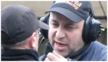

PRINCIPAL
sponsors
EQUIPO


-
 Daniel Zanzotti
Daniel Zanzotti

- reportaje al campeón
- 35 años subido a un fórmula
- El TULIA CAMPEON


2017 un año complicado


Saludando a Tulio
TULIO:
Hace mucho que no nos vemos.
No sé cuantos años tenés, yo tengo 61 y vos tenias algunos más que yo cuando te conocí
en tu tallercito de Villa Crespo.
Salido del curso de Jorge O. Del Rio , mis comienzos fueron en la FORMULA RENAULT en 1979 y en el equipo de Juan Lascak.
Compré un XXI que Pernigote descartaba porque vos le hacías uno más liviano con la idea que pelee la punta. Con ese hice mis primeros pasos y acumulé experiencia hasta que unos años mas tarde le compré al Tano Sena un TULIA XXIII que era de la familia Martinelli.
Ese es el auto que me acompañó hasta hoy .
Muchos, muchísimos parches , modificaciones y arreglos de todo tipo tuvo a lo largo de prácticamente 30 años , pero la esencia con la que nació es la que me trajo hasta aquí en estos últimos 7 años exitosos.
Conozco hasta su último tornillo y es como parte de mi cuerpo .
En plena carrera muchas veces hablé con él motivándolo a que multiplique su esfuerzo para poder ganarla.
Cada campeonato logrado lo hemos festejado juntos y siempre he reconocido que buena parte le pertenece.
Este tercer campeonato fue muy especial para nosotros. Trabajamos muchísimo y lo ganamos tal vez por nuestra mayor fortaleza : La perseverancia .
Y ya mas tranquilos……. , con muchos años encima , nos pusimos a repasar viejas historias , y en ellas estabas vos, su creador . De él y seguramente de muchísimos Tulias más que habrás construido. Pero tal vez no quede alguno que con tantos años encima todavía pueda lucir orgulloso el Nº1 .
En fin imaginando que ya estamos dando nuestras últimas batallas, quisimos compartir con vos también nuestro ratito de gloria, en la seguridad de que te arrancará una sonrisa y la satisfacción de ver que este auto al que le pusiste tu nombre, logró ser el mejor en lo suyo.

8/12/15 -INCREIBLE FINAL DE CAMPEONATO!..... OTRA VEZ TENEMOS EL 1!!!
SE PUEDE !! SE PUEDE !! Intimamente tenia esa convicción , y ademas con la tranquilidad de que todos suponian que era imposible , esa mañana de domingo comencé el día mucho mas distendido de lo que días antes me imaginaba. La federacion como respuesta para la resolución del campeonato ante la situación de finalizar primero pero sin haber ganado carrera en el año, me mandó - Ganá la Carrera y se Acabó el problema-
Pilotos nuevos y viejos pilotos, mecánicos y amigos del Sport en general se acercaban antes de largar la carrera para alentarme y desearme que pueda ganarla . En fin creo que la convicción y la buena onda en este caso pusieron lo que hacia falta y la bandera a cuadros la vi yo primero que nadie y el escalón mas alto del podio finalmente me consagró nuevamente campeón y por sobretodas las cosas corroboré con lo competitiva que estuvo la categoría este año , que tengo encendido todos los faroles para discutirle a cualquiera y en las condiciones que se presenten.
El equipo con el pelado y Maxi en el auto , Gaby Teresio en el motor y Gaby mi hijo a mi lado para todo lo que se iba presentando, funcionó a la perfección para que el auto estuviera bien a punto y rindiera como en sus mejores épocas.
El viernes como de costumbre los tiempos eran buenos, esta vez cuidamos mucho el auto para preservarlo y evitar fatigas innecesarias .
Pusimos en una tanda las cubiertas nuevas para testear que llantas y caucho estuvieran en perfectas condiciones.
Teniamos un auto velóz y estabamos dispuestos a cuidarlo igual que a las gomas para la batalla final.
El único resultado posible para nosostros era ganar la final , por lo que la clasificación y la serie aun siendo importantes no eran nuestro objetivo.
El equipo Porcelli estaba muy afilado con Ale Pereyra que estaba tercero en el campeonato y Hernán Beric con un motor gemelo al mío eran rivales importantes y contaban con que yo no ganara para darle oportunidad a alguno de ellos de llevarse el campeonato.
Pero a quien asumía como verdadero contrincante era a FLAVIO EISENCHLAS.
Campeón vigente, y con un auto excelente preparado por su hermano Bryan y un motor que tenía un poco mas de potencia que el mío gracias a la mano prescisa de Pablo su papá , iba segundo en el campeonato, habia clasificado primero y tenia además a su papá en 2do lugar y a Matias Ignazzi ( empleado suyo ) tercero lo que le daban una ventaja adicional en la seguridad que sus escuderos evitarían que yo me acercara dejandole libre el camino al campeonato .
Pero las energías estabán a mi favor ese día. En principio Ignazzi tal vez desacostumbrado luego de la clasifica no entra a parque cerrado ,Alertado el director deportivo por mi jefe de equipo ( Claudio Becerra ) le retira los tiempos y va al último cajon de la grilla. para la serie. De esta forma largué 3ero y pude en la serie pasar a Pablo Eisenchlas quedando 2do para la grilla de partida de la final.
Asi las cosas cambiaron rotundamente.
Flavio sin nadie que me demore , quedaba como único responsable de que yo no llegara primero. Entiendase por esto que él no tenia otra alternativa que evitar que yo lo pase para poder ser el nuevo campeón .
Alejandro Pereyra decide cambar motor y por ende va a largar ante último la final.
Asi las cosas la carrera a los ojos de todos se habia reducido al trámite que hagamos nosotros dos en las 14 vueltas que estaban previstas.
En los boxes estaban expectantes. Todos los integrantes de la categoria estaban pendientes de este duelo mas allá del grado de participación que tenían, pilotos de punta y los de atrás también, mecánicos directivos , fotógrafos y periodistas, en la torre de control sabián perfectamente que se dirimía el campeonato a favor del 2do si ganaba la carrera y a favor del 1ero si el 2do no ganaba la carrera.
Entiendase bien, si Flavio me demoraba el sorpaso , e incluso el ganador era su padre, él se quedaba con el campeonato.
Las probabilidades no me favorecian, pero nosotros habiamos trazado un plan de carrera que daba algunas chances a mi favor.
Por un lado habiamos puesto el auto veloz pero seguro, el motor fue repasado por Gaby Teresio después de la serie para corregir carburación de acuerdo al clima .Habíamos guardado caucho y nuestros neumáticos eran mejores que los de Flavio.
Él pasaba a tener la responzabilidad de no dejar que lo supere sin que nadie lo asista,por
otra parte estaban con bronca porque en la revisión de gomas del parque cerrado, pidieron la verificacion de mis cubiertas entendiendo que no estaban selladas , pero como Becerra habia dado vuelta los neumaticos , el sello quedó para adentro y no se veia con lo que quedarón descolocados ante el director técnico de la prueba sumando mas presión a la tenian por la desclasificación de Ignazzi.
Entonces con este panorma creimos que nos favorecería acosarlo lo mas cerca posible para forzar un error y poder pasarlo sin que pueda tocarme.
Yo estaba confiado en que las cosas saldrían como lo teníamos planeado y vuelta tras vuelta lo iba materializando cumpliendo con mi parte . Asecharlo a Flavio por un lado para que me sienta soplarle en la nuca y por el otro con ese ritmo de carrera separarnos lo mas posible del resto de los competidores para que yo no tuviera que mirar mas que para adelante.
Mi caja de cambios nueva funcionaba perfectamente pero la primera era larga y no se podia acortar.
Pensé: en la largada tenia que defender el 2do puesto en la curva 1 y luego todo seria normal.
Largamos y mi auto y yo fuimos directo y sin problemas a frenar en la 1 bajo la caja de Flavio que iba con prudencia. A la salida entramos en un ritmo vertijinoso , él tratando de poner distancia y yo tratando de quedarme lo mas cerca suyo.
Al cumplir la primer vuelta ya le habíamos sacado a Pablo , el 3ero, unos 80 metros con lo que ya no representaba un peligro para mí.
Vuelta tras vuelta nos ibamos alejando del resto . Yo rogaba que no entrara ningún auto de seguridad para que esa distancia ganada no se perdiera.
En fin , yo iba seguro, el auto respondia bien el motor con la succión me ponia tan cerca que lo obligaba a mirar mucho por los espejos y tomar decisiones según lo que yo hacia.
En los Boxes por otro lado tomaban los tiempos para ver si yo podía pasarlo.
La importancia de esta definición hacia que los demás no fueran tenidos demasiado en cuenta. Habia 2 carreras , una la mia con Flavio y otra la de todos los demás.
Ni roturas ni errores hasta la vuelta 12 habián enfriado los ánimos de mi equipo que imaginaban un resultado
infructuoso de mi lucha.
Yo en cambio alentaba una esperanza en los dos rezagados que estábamos a punto de alcanzar y que podian cambiar el equilibrio reinante.
Primero Grosso que lo alcanzamos a media recta y lo pasamos sin problemas Flavio por la izquierda y yo por la derecha. Metros mas adelante Fabio Gonzáles transitaba por el medio y mis cálculos me decian que lo tendríamos que pasar casi llegando a la 1 por lo que tal vez me permitiría romper el equilibrio . Fabio que miraba por los espejos se mantenia en el medio de la pista para no molestar , a sabiendas de lo que se estaba dirimiendo.
En ese momento defino mi postura volcandome rapidamente sobre la cuerda. Flavio por su parte quiere pasarlo por afuera. Era entonces la oportunidad, talvez la única.Alargué la frenada para acortar terreno y casi me escondí detrás de Gonzalez al llegar a la curva.
Muy posiblemente en el último instante Flavio me buscó en sus espeos y no me vió solo el instante de pensar donde estaba , esa fracción de segundo ..........hizo que se pasara 2 o 3 metros en el frenaje.
Estábamos al límite , un pequeño error era lo que yo necesitaba y se dió. Flavio con los neumáticos calientes , amplia el radio óptimo de giro y recoje con el caucho basura del extremo del circuito lo que hace que pierda adherencia y lo obliga a doblar muy abierto y a encolumnarse atras del rezagado. Yo por mi parte advirtiendo esto , trato de poner distancia y llego finalmente al curvón.
Al salir de él y encarar la recta veo el caminar seguro del banderillero que se acerca y levanta frente a mi el cartel de ultima vuelta. Cuando veo esto presiento que debo ir a fondo y bien al límite hasta superar la 1 que entendía sería el lugar elegido por Flavio para alcanzarme y en todo caso evitar que llegue primero de alguna forma.
Superé la curva 1 sin que me alcance y empecé a sentirme campeón, la S con el asfalto roto ,le pido a mi Tulia que haga el último esfuerzo en la trepada hasta la olla .A la salida cuidado con los reductores, pero a fondo hasta el retome de segunda.
Todo en orden Flavio sigue unos 40 metros atrás, contra recta y veo los boxes con movimientos. Un banderillero me alienta disfrutando del resultado, entro en el curvón y veo que Flavio no me alcanza , levanto apenas para asegurar y luego a fondo de salida a la recta ..........
Otra vez el paso firme del banderillero pero esta vez mirándome fijo y con la cuadriculada en la mano, mientras me acercaba veia levantar la bandera y me sentí verdaderamente orgulloso. Atrás veia volar los buzos y gorras en el paredon de boxes . De pronto todo sonido se acalló y me parecio oir solamente el aletear de la bandera a cuadros a mi paso mientras el banderillero ensayaba un glorioso salto que ponia fin a todas las tensiones.
Recobré el sonido, ........el motor satisfecho y el auto radiante daban la vuelta de honor de mi mano.
Todos los banderilleros saludaban al nuevo campeón que se dirige al pesaje y la revisión técnica.
Un tumulto impide la entrada colmando de gritos, palmadas y saludos de todo tipo.

SE PUDO!!! , SE PUDO!! gritaba alguno mientras yo salía del cocpit para abrazarme con mi hijo y todo el equipo.
Que felíz que me sentía en lo alto del podio por primera y última vez en el año.
Sentí el afecto de la gente y el reconocimiento de mis pares. Realmente me sentí un Campeón.

A mi felicidad se oponía la trizteza y la bronca de Flavio que entregó su posible segundo título para que de ahora en más me llamen TRICAMPEÓN.
.

EN EL GALVEZ dimos Cátedra en el 9 pero no alcanzó
.jpg)
El Autódromo de Buenos Aires , no por nada llamado la catedral del Automovilismo tuvo y tiene en mi un valor sentimental indiscutido. Mis comienzos en esta pasión por la velocidad esáan asociados claramente a esa mole de cemento y asfalto dándole identidad a mi historia y carácter a mi manejo.
De todos los circuitos que dispone el Galvez y que he corrido tantas veces , el 9 es para mi el mas técnico, el mas lindo , el mas dificil y en el que mis resultados no fueron los mejores . El 9 sin embargo siempre fue un profundo desafio para mi concentracion y destreza, para mi valentia y arrojo , y plagado de secretos encerrados en cada curva , cada frenada y cada centimetro de su pista.
Para esta ocasión , la preparacion óptima del auto y el motor que me entregó el equipo Becerra y los Teresio
se vio menoscavada por la caja que me entregó Roberto López de Graff.
Ocurre que gracias a un recambio del piñon y corona , Roberto me intaló
un piñon y corono de ecelente calidad mejor que el que yo tenia , pero de otra multiplicación y quede con una primera tan
larga que daba pena y una 3era muy ajustada para mi gusto.
Estas fueron las razones por las que no pude sacarle el mayor de los provechos a la impecable preparación del chasis y el rendimiento superlativo de mi planta impulsora.
Una largada m
4 de octubre en Dolores y retomamos la punta
La categoría se presenta por segunda vez en el año en la Ciudad de Dolores
. El circuito de 3150 metros , muy sinuosos y de cortas rectas amerita una puesta a punto del auto totalmente distinta. Despues de la pobre performance de la última del Mouras, rehicimos el auto con multiples cambios de piezs de suspencion y parrillas , contrapesamos todo el auto y llegamos el viernes 2 de octubre al autodromo para verificar lo efectivo de los cambios. Como es costubre las prácticas de los viernes siempre me traen buenos resultados. hisimos un 1:19:20 que es recor de la categoria en el circuito. No se en realidad como fue posible dado que practicamente toda la tanda anduvimos en el 1:20.10.
Dolores para la categoria tiene un sabor muy especial porque es la oportunidad de salir de buenos aires y compartir un epacio diferente con los otros pilotos. Hotel , desayunos , cenas y algunas cosas mas que hacen del fin de semana una jornada diferente.
Setiembre en el mouras con el auto herido
El Mouras siempre me trató con cariño. En realidad siempre recuerdo aquella tarde de diciembre del 2009 en que con el auto Nº10 me consagré campeón ganando la ultima del campeonato de punta a punta como reza la canción del Campeón.
En esta ocasión tampoco puedo quejarme dado que mi super baquetedo Tulia XXIII no estaba en sus mejores dias . Luego del golpazo que me propinara Eduardo Vázquez en Buenos Aires el auto quedo maltrecho y se fue desarmando a lo largo del finde. Primero el ruleman de maza , luego el soporte del amortiguador trasero, lugo el juego en las parrillas y como si esto fuera poco , frenaba una sola rueda delantera y nunca supimos a ciencia sierta que le ocurria. La cosa es que igual me la ingenie para llegar tercero en pista aunque cuarto finalmente por un recargo de 10 segundos por falsa largada.
La lucha por la punta del campeonato es punto a punto entre Alejandro Pereyra y yo
Agosto doble en Buenos Aires
Buenos aires y 2 carreras en el circuito 5 que tan bien le cae a mi auto, no fueron la mejor combinacion en esta ocacion para mi euipo. El 5 es un circuito chico y con la paridad de los 7 autos de punta , cada metro del circuito se peleo palmo a palmo y sin descanso.
siempre los tiempos del viernes son muy buenos. esta no fue la excepción , yo al frente y luego bBeric y Pereyra a 5 decima atras. Flavio Eisenchlas recien sobe las ultimas vueltas de claificación pudo meter un tiempo magnífico y se quedó con la pole.
Mouras por partida doble 3ero en las dos
La primera fecha doble del campeonato se llevó a cabo en el Mouras. En dos oportunidades nos medimos todos y en las dos ganó Beric y segundo llego Pereyra y en la otra Tarquini. Beric tuvo la suerte de que en la primera Flvio no largó porue estaba suspendido y yo largué último porque en la clasifica con la bloqueada de la rueda delantera derecha se produjo un reventon y quedé sin tiempos. Y en la segunda como
14 de junio BUENOS AIRES 4to otra vez
Buenos Aires circuito 8 . Como siempre Bunos Aires con esa atmosfera de importante , con esa historia ajena y la propia que pesa y estimula .
Un reportaje al campeón
Ya son muchos años de automovilismo y seguramente tendrás miles de anecdotas para recrear el clima que envuelve a un piloto cada vez que se dispone a armar el bolso.
El nobel periodista ensaya su reportaje a un colorido piloto ya entrado en años que lo llaman EL CAMPEON y que se baja de un monoposto.
Mirando detenidamente a su requirente , le pregunta -y vos pibe de donde sos?-
Antes de que comience a relatar sus credenciales , El campeón con una palmadita cariñosa en la mejilla lo invita a tomar unos mates en el box y a escuchar alguna de esas jugosas historias que el pricipiante necesitaba para presentar su tesis en la Escuela de Periodismo Deportivo .
Alli entre el sonido de herramientas y motores, y rodeado de mecanicos y curiosos que fueron sumándose,
el viejo zorro de las pistas comienza el relato de lo que para él fueron sus comienzos.
Era una mañana de 1984 , imagino que en el mes de marzo , comenzaba el campeonato de Formula Renault en el Galvez .Yo que habia hecho el curso de O.del Rio me montaba por primera vez a mi Tulia XXI .
Buzo y guantes de FORMULA ONE y casco SIMPSON nacional que estaba de onda y era igual al que usaba el enano Gurini , el Loco Giachino y el Toto Etchegaray.
Juntando unos cuantos mangos y con ayuda de mi vieja le compre el auto a Pernigote y el me presentó a Juan Lascak y Ricardo Xanmar que fueron mis primeros jefes de equipo.
Eramos 4 pilotos , Pernigote de mucha experiencia y que peleaba la punta y 3 principiantes que permitian cubrir el presupuesto del equipo y formar la retaguardia del piloto estrella . Daniel Zanzotti, Antolini y un tal Daniel Cingolani, un pendejo con rulos que venia de Chacabuco .
Ese año con mi debut se incorporaron los pontones en la fórmula Renault , diseñados y fabricados por Tulio Crespi y los autos se veian mucho mas importantes . El parque era numeroso (60 autos ) y por los boxes se paseaba el Viejo Legnani y sus 2 hijos , el flaco y el gordito que tenian un poderio periodistico con su CAMPEONES que iba por Radio el Mundo (1070) a las 20 hrs y que junto con la revista CORSA que conducia el negro Rojas cubrian absolutamente todo el automovilismo nacional.
Era otra época, otros valores, otra lucha ................
asi el Campeón siguio relatando con lujo de detalles una y otra anécdota de los primeros años de su campaña . ya eran como 20 que atentos escuchaban e incluso aportaban detalles que enriquecian el relato
El pibe del grabador ya se perdía en el paisaje y a la vez disfrutaba ese viaje por el tunel del tiempo en que su interlocutor los habia embarcado. En pleno relato la abrupta aparicion de la tanda publicitaria con la frase de cierre de rigor que rezaba - un torbellino de recuerdos compartimos con uno de los viejos campeones que hoy en plena vigencia peina sus canas con suma solvencia a 200 km/h en la recta del Mouras un domingo al mes.

DOLORES CUARTO Y LA PUNTA DEL CAMPEONATO
El viernes llegamos algunos con la clara intención de ponernos al día con un circuito distinto para mas de uno. Los debutantes en el circuito ( Pereyra ,Solla y Mazzini) fueron los que desquitaron su
ansiedad y giraron reconociendo cada rincón de la pista. Los demás fueron llegando a media tarde y noche y se instalaron en el Plaza Hotel que nos tenía reservadas suficientes habitaciones para toda la categoría. En los alrededores del hotel se veían entonces revolotear a personajes claramente ajenos a la Ciudad. Raros individuos que alteraban la tranquila noche de Dolores.

El sábado por la mañana a las 08:00 hrs. gordos dormidos , pelados dormidos , viejos y pendejos dormidos revolvían el café con leche con una medialuna antes de partir hacia el Autódromo.
Durante todo el sábado probaron los SPORTPROTOTIPOS adaptando cajas de cambio y suspensiones al trazado que presentaba algunas mejoras en el abrasivo asfalto del circuito.
Los tiempos rondaban los 80 segundos y un poquito y en muy pocas décimas se ordenaban los 7
pilotos mas rápidos.
El Circuito, obligaba a frenar a fondo , doblar para atrás y entrar en una chicana muy finito.
Se gastan mucho las gomas y las pastillas de freno, pero es muy divertido.
En fin la jornada soleada del Sábado 9 terminó por agotar a los mas fanáticos de las pruebas y todos se fueron a pegar un baño al hotel para encontrarse a las 21:30 ( salvo Torra que llegó tarde según él por culpa de su yerno ) en La Donosa .Un restauran bien puesto con platos abundantes y variados en donde los 32 comensales del Sportprototipo pudieron cortar el ayuno del mediodía .El pollito relleno, el matambrito , el salmón ,las tortillas y las pastas se tiñeron con el tinto de primer nivel que corrió por algunos paladares exclusivos mientras que otros mutilaban chistes verdes para no quedar tan mal con las mujeres presentes.
A los postres y a las 24 hrs un Felíz Cumple le cantaron a Germán Ciancio que quedó a la puerta de los 40 con cara de resignado, pero que finalmente se iluminó ante el llamado de su hija de 15 años…..
El domingo también con sol , fue una jornada intensa y de resultados cambiantes . La gente de la Federación , comenzó a las 8:30 con la revisión técnica. A las 9:30 tuvimos la reunión de pilotos.
A esa hora Luis Mazzini (debutante en la categoría) que fué con toda la familia , seguía durmiendo
en su trayler después de romper todo lo que pudo del auto en las práctica del sábado y haber decidido ver la carrera desde boxes.
Ya eran las 10:30 y el parlante de boxes llamaba a clasificar al primer grupo de los sportprototipos
Tras 10 minutos de frenética marcha salieron a pista los del segundo grupo y los sensores determinaron que la pole era para el campeón FLAVIO EISENCHLAS con la planchita (que de planchita ya le queda poco ) verde del EMR.
2do. Germán Ciancio, 3ro. Juan Vázquez 4to. Daniel Zanzotti, 5to Alejandro Pereyra , 6to. Pablo Eisenchlas, 7mo Eduardo Vázquez, 8vo. Horacio Tarquini , 9no Guillermo Ortíz, 10mo. Rubén Solla, 11vo . Jorge Martillana , 12do Jorge Torra, 13ero. Luis Mazzini y 14to Jorge Sesali.
Los cuatro primeros encerrados en 7 decimas revelaban una paridad entre autos motores y pilotos que ya es costumbre en la categoría.
Exactamente a las 14:57 hrs. Se apagaba el semáforo y largaban los
Sportprototipos la serie a 8 vueltas como es habitual de partida detenida . Lo puestos cambiaron
producto de fallas técnicas en los dos primeros y sorpasos en la línea media recibiendo la cuadriculada y fijando la grilla de partida de la final de esta forma:
1ero Juan Vázquez, 2do Daniel Zanzotti, 3ero Pablo Eisenchlas , 4to Alejandro Pereyra , 5to Horacio Tarquini , y luego Solla, Ciancio,Martillana , Torra , Flavio Eisenchlas, Eduardo Vázquez Guillermo Ortiz , Jorge Sesali y Luis Mazzini ( estos dos últimos no fueron finalmente de la partida por fallas técnicas ).
A las 16:30 salen nuevamente a la pista los sportprototipos a cumplir con las 15 vueltas programadas para la final.
En el autódromo se vivía un clima de distención y se podría decir de satisfacción por el correcto desarrollo de las competencias. Algo de ansiedad se vislumbraba tanto en el box del campeón como en el Wind Racing de Germán Ciancio que se veían obligados a remar desde atrás.
Otro era el cantar en el Manolo Sport que tenía a su nobel piloto Juan el Facha Vázquez
en el primer cajón de la grilla.
A su lado el puntero del campeonato a bordo del Tulia negro del Becerra Racing abrigaba sobradas esperanzas de alzarse con buena parte de los puntos en juego .
El presuroso cruce de la pista del auxiliar con el cartel de 5 minutos, vaticinaba una largada inminente.
Los motores de pronto suenan a pleno y……..allá partieron todos en busca de la 1.
Los dos primeros como poniéndose de acuerdo logran rápidamente una distancia con la planchita roja del mayor de los Eisenchlas. Mas atrás Germán Ciancio, Horacio Tarquini que había cambiado relaciones de su caja y Flavio Eisenchlas luchaban palmo a palmo en cada rincón de la pista por mejorar sus posiciones. En una de esas escaramuzas y envueltos en una nube de tierra quedan fuera de carrera nada menos que el campeón y el piloto número 1 del Manolo Sport y segundo en el campeonato Horacio Tarquini. De resultas , el auto de seguridad se hace presente y la luz ganada por los punteros se reduce a unos metros propios de la fila india.

Luego de 2 giros las balizas del Pace Car se apagan y los monopostos retoman velocidad de carrera sin que inicialmente se produzcan sobrepasos.
Los tiempos de los punteros por momentos superan los tiempos de clasificación en un vibrante duelo entre el 9 y el 2 sin cambiar las posiciones. Mas atrás Ciancio y Pablo Eisenchlas peleaban por el 3er lugar y Ortiz y Pereyra por el 5to puesto. Luego Solla , Martillana yTorra alternaban posiciones. El abandono de Martillana detenido al costado de la pista, obliga a la salida del Auto de seguridad por segunda vez. Nuevamente la fila india estrecha las diferencias obtenidas por los 2 primeros y en el relanzamiento la lucha entre los cuatro primeros se hace intensa marcando el mejor tiempo de carrera Germán Ciancio con 01.20.393 seguido por Daniel Zanzotti con 01.20.394 ( solo 1 milésima) que habla una vez mas de la paridad de los autos y pilotos de punta.
El banderillero prepara la bandera a cuadros y cuando las cosas parecían terminar así , faltando metros para la llegada la rotura de la cruceta izquierda deja sin tracción al auto negro del Becerra Racing perdiendo el segundo puesto a manos de Ciancio y el tercer puesto a manos de Pablo Eisenchlas. Dejando una vez más en claro que las carreras terminan cuando se baja la bandera a cuadros . El resultado final fue entonces:
1ero . Juan Vázquez, que con una sonrisa de oreja a oreja festejó su primer triunfo con champagne en el podio , 2do Germán Ciancio, 3ero Pablo Eisenchlas, 4to Daniel Zanzotti, 5to Eduardo Vázquez , 6to. Rubén Solla, 7mo .Jorge Martillana y 8vo. Jorge Torra; cumpliendo con la vuelta del puntero.
El Campeonato queda entonces de esta forma:
Daniel Zanzotti ……….59
Germán Ciancio……….47,5
Pablo Eisenchlas………37
Horacio Tarquini………35,5
Juan Vázquez………….. 35
Alejandro Pereyra……32
Flavio Eisenchlas……..25,5
Rubén Solla……………. 21
Jorge Martillana ……..12,5
Eduardo Grosso………..9
Eduardo Vazquez………8
Matías Ignazzi……….…. 7
Hernán Beríc………….… 5
Jorge Torra…………….….4
Sergio Cainzos………..… 2
Equipos
Manolo Sport ………….50
Becerra Racing………..37
Wind Racing…………… 36
BMR………………………..29
Porcelli Competición 19,5

La próxima cita es en un mes en el Gálvez, la Catedral del Automovilismo Argentino.
Tres carreras se han corrido y tres pilotos distintos las ganaron. Tendremos otro ganador en Buenos Aires? La categoría está en su mejor momento. Y nostros vamos a hacer lo necesario para que nosotros seamos el cuarto ganador
LA SEGUNDA EN EL MOURAS 3ero
El viernes como es habitual estabamos primeros en lostiempors y con 1m,09,80 era muy dificil creer que nos superaran. Lo cierto es que el dia sábado se presentó diferent la pista y habiendo perdido unas decimas , con 1m.10 80 clasificamos en el 5to puesto. Increible pero ya la performance de la categoría obliga a estar 10 puntos .Oficialmente los 6 primeros clasificaron en 7 decimas. milesimas me separaban del 4to. un Alejandro Pereyra que en su segunda carrera atendido por Porcelli ya esta dando que hablar.
En fin al medio dia del domingo largamos la serie y lo pude pasar en pista terminando 4to , o segundda fila detras de Ciancio para la final.
A las 15:30 largamos dispuestos a disputar la punta pero mi auto perdia decimas en la olla y los frenajes y mi motor no era el de las dos últimas del 2014. Asi que me dispuse a cuidar el cuarto puesto, y a mitad de carrera vi abandonar a Tarquini que circulaba en 3er lugar , pudiendo en dfinitiva hacer el 2do podio en 2 carreras disputadas. Esto no es nada menor porque con el 2do y 3er puesto de ambas ahora estoy solo en la punta del campeonato a 10 de precisamente Horacio Tarquini.
La carrera la ganó Ciancio que con su motor fiat y un auto que va muy en el límite , logra imponerse a un Flavio Eisenchlas que me da la sensacion que el 1 le pesa un poco.
En fin Dolores el 10 de Mayo será un tema aparte y veremos si podemos ganar , cosa que es necesaria para lograr el 1 y ademas muy dificil por como esta la categoría.

El viernes 8 saldré a pista a probar suerte a 200 km de Bs As. veremos que ocurre.
MARZO DE 2015 OTRO CAMPEONATO - OTRA VEZ EN LA PUNTA
Marzo 21 y 22 en el Mouras comenzamos el campeonato 2015 .
12 autos se pesentaron , faltaron 4 que eran seguros pero la carrera fue fantástica. Ya desde el sabado con pruebas libres, veniamos haciendo los mejores tiempos y un 1.09.60 marcó mi propio record al circuito.
Si bien Ciancio se acercó a mis tiempos , para la clasificación pude repetir el tiempo y lo superé por 5 decimas a él y 1 seg a Flavio el actual campeón.

Largamos la serie en ese orden y por un leve error mío en confiarme en los frenos, me pasé en la 1 y terminé segundo . La final a 16 vueltas al chico , se largó a las 15:30 y recuperé la primera posicion en la primera curva, Ciancio sorprendido cometió 2 errores graves al toque y un trompo lo deja afuera de la carrera y para colmo se lo lleva puesto a Flavio con lo que yo quedo practicamene libre para alcanzar la bandera a cuadros sin problemas .
Tarquini largo último por cambio de motor y a priori no representaba un peligro , pero .......carreras son carreras y terminan cuando bajan la bandera.Asi que faltando 3 vueltas se me ronpe el resorte del carburador y gracias a mis buenos oficios y a que llevaba una luz de casi 12 segundos, pude terminar 2do.
adivinen que ..........atras de Horacio Tarquini.
En fin mi segundo puesto en la serie y final me permiten estar nuevamente en la punta del campeonato. Esta vez compartiendo la punta con Horacio Tarquini, que con esta ya tiene 4 al hilo ( ojo ).
Agradecido por supuesto por seguir corriendo, por seguir peleando el primer puesto con un auto y un motor envidiables , por tener a mi hijo Gabriel compartiendo mi pasión cada carrera y por la amistad y el reconocimiento de mis mecanicos y la categorñia toda.
FINALMENTE NO PUDO SER
Contra todos los pronósticos en una definición inesperada Flavio Eisenchlas se consagró campeón del SPORTPROTOTIPO 2014. En un año Excelente de la Categoría que promete aun mas para el 2015.

Durante todo el campeonato , el número 1 Daniel Zanzotti sufrió el asedio de Germán Ciancio y Flavio Eisenchlas por alcanzar la punta del campeonato. Si bien el campeón 2013 siempre lideró el mismo, sobre la mitad del año tanto Germán como Flavio daban muestras de estar en mejores condiciones para alcanzar el galardón. En ese entonces nadie estaba seguro del resultado.
Las carreras una a una ganadas por los retadores y el segundo escalón del podio para Daniel Zanzotti le aseguraba al campeón seguir al frente en los puntos. Ya para octubre la lucha parecía circunscripta a Flavio y Daniel con ventaja marcada para este último. Pero en las dos últimas carreras la suerte no acompañó al piloto del Becerra Racing, que con motores de Teresio marcó los mejores tiempos, pero un trompo con lluvia en Buenos Aires y una rotura del motor en el áspero Premio Coronación en la Plata que otorgaba puntaje y medio lo dejaron finalmente con el número 2 para el año entrante.
En los últimos 6 años el Becerra Racing y los motores de Teresio lograron 2 campeonatos (2009 y 2013) y 4 subcampeonatos (2010, 2011, 2012 y 2014) con un TULIA XIII, un Ranault 1400cc. y la

conducción de DANIEL ZANZOTTI. Por todo esto es candidato obligado en la disputa del campeonato. Sin embargo se sabe que el equipo está en búsqueda de un compañero en la pista para que cubra las espaldas del laureado Danielzan.

El viernes probaban los sportprototipos y en buen número .
La pista por primera vez era transitada por los monoplazas con el asfalto nuevo.
El clima ideal y todo en sintonía , ponía al auto amarillo del equipo Becerra al tope de los tiempos con valores fuera de lo común 1:09:28. El resto se acomodaba en torno a los 10 ,11 y 12 segundos por encima del minuto. Asi las cosas el sábado con un cronograma ajustado, se vio reducido a una sola tanda de pruebas , la clasificación a la 15:30 y la serie a las 18:30 hrs . Modificación propuesta por la dirigencia al Mouras , para tener un horario razonable para la final que se corrió a media tarde del Domingo 14 de diciembre .
Los tiempos clasificatorios marcaban claro dominio del campeón Daniel Zanzotti y de el piloto numero uno de la escuadra de Manolo Vázquez, Horacio Tarquini. Mas atrás Alberto Areas del equipo Porcelli que parecía estar en sintonía con la punta a solo 3 decimas del poleman.
Flavio y Pablo Eisenchlas cuarto y quinto y Ortiz en sexto lugar conformando así la tercera fila en la grilla de largada de la serie. Sol hasta las 17 hrs. …………… en donde de la nada como convocada por un hechizo zatánico se desató una tormenta eléctrica con vientos y granizo rara vez visto. Hielos del tamaño de una pelota de golf pegaban a los autos estacionados y a los ocasionales en pista , por suerte de otra categoría .
Finalizada la tormenta a las 18:30 el Sportprototipo sale a pista con la puesta a punto totalmente cambiada, la pista mojada y las banquinas anegadas.
Como es habitual en estos casos , puede ocurrir cualquier cosa.
La largada a ritmo del puntero y en fila india se produce una vez que los bólidos transitan por segunda vez frente a la torre de control. La bandera verde se agita con vehemencia y allá van despedidos y envueltos en una bruma los autos en busca de la curva 1.
Al final de la recta Tarquini por afuera iguala la línea de marcha del puntero que queda por la cuerda transitando en forma obligada por encima de un charco de agua junto al piano.
Resultado : parte hacia afuera el puntero quedando en el barro atrapado mientras los demás autos transitan cuidadosamente el peligroso sector hasta salir de la S que lleva a la contra recta.
Auto de seguridad que le resta 2 vueltas a la carrera y reanudada esta, la cuadriculada da orden de largada para la final al día siguiente una vez que cruzan la línea de sentencia Guillermo Ortiz con la planchita N-11 del Manolo Competición, seguido por Flavio Eisenchlas , Horacio Tarquini, Alberto Areas , Matías Ygnazzi , German Ciancio, Eduardo Grosso , Pablo Eisenchlas, Juan Vázquez ,Gastón Testa, Daniel Zanzotti, Oscar Menacapelli, Carlos Geronzi y Jorge Torra cerrando los 14 clasificados.
El sol del domingo asomó con fuerza y para el mediodía ya los autos y los boxes habían recobrado su fisonomía habitual. Si bien cada carrera tiene su importancia para el campeonato , la última tiene un color diferente porque se define el campeonato . En el Sportprototipo es costumbre que la última carrera del campeonato otorgue puntaje y medio para poner mas puntos en juego y que la lucha por el título tenga mas aspirantes.
Esta vez ese ingrediente no hizo finalmente la diferencia.
En las últimas 2 carreras ya se perfilaban como únicos aspirantes al título el campeón Daniel Zanzotti con el Tulia XXIII alistado por el Becerra Racing y Motor Renault 1400 preparado por Teresio , y Flavio Eisenchlas con el numero 4 en su planchita verde ingles y motor Renault 1400 preparados ambos por el Eisenchlas Motor Racing ( EMR ).
Si bien durante todo el año los puntos que separaban al campeón de sus seguidores eran suficientes para sentirse tranquilo en la punta , sobre el final de campeonato un trompo en Buenos Aires con lluvia lo priva de sumar puntos, y la fallida serie del premio coronación con similar resultado , le permiten a Flavio Eisenchlas , descontar los puntos suficientes para quedar solo a 3 de la punta y obligar así al líder que partía desde atrás en la grilla , a disputar del título vuelta a vuelta en la final del campeonato.
Los Sportprototipos se forman en doble línea para largar en partida detenida.
En la primera fila Guillermo Ortiz y Flavio Eisenchlas, y varios puestos mas atrás en el puesto once , el numero 1 con el auto amarillo
3 puntos de ventaja a favor del Campeón no eran suficientes para retener el título , era necesario que superara al 2do. clasificado.
Todos los corredores estaban atentos a esta disputa y actuaron en consecuencia.
Había solo 2 pilotos con posibilidad de ser campeones . Desde los boxes se prestaba atención especial a este desenlace.
Cartel de 5, 3 y se prende la roja , los motores gritan su poderío durante un espacio de tiempo incierto que culmina cuando las luces rojas se apagan y antes que se encienda el verde ya los neumáticos se prenden al asfalto con desesperación para dar el salto.
Los punteros con la mirada en la curva 1 , los de atrás en el comportamiento del que los precede.
En muy buena largada el N- 1 llega a la primera curva en 7mo lugar superando a 4 autos, mas adelante se encolumnan Ortiz , Flavio Eisenchlas , Tarquini , Ygnazzi, Ciancio, Areas , Pablo Eisenchlas ( papá y de Flavio ).
A la salida de la S Zanzotti con andar firme y veloz supera a Pablo Eisenchlas , y metros después del retome de segunda, hace lo propio con Germán Ciancio, al pasar por primera vez frente a las tribunas la fila india se conformaba con Horacio Tarquini que tomaba la punta de la carrera Guillermo Ortiz , Flavio Eisenchlas , Matiaz Yganzzi (compañero de equipo de Flavio ) Daniel Zanzotti , Germán Ciancio, Alberto Areas , Pablo Eisenchlas, Gastón Testa, Juan Vazquez Eduardo Grosso , Carlos Geronzi, Oscar Menacapelli y Jorge Torra. La lucha por el campeonato se va a dar en la vuelta 3 cuando Zanzotti después de pasar a Ygnazzi en el final de la segunda vuelta alcanza y aparea la marcha en el curvón de Flavio Eisenchlas. Todos estaban pendientes de lo que ocurriera

en el mano a mano entre los dos aspirantes especialmente las autoridades deportivas. Mientras tanto Horacio Tarquini se afianzaba en la punta con un auto y un andar contundente.
Ortiz si bien segundo , empezaba a perder rendimiento y no le podía seguir el paso al puntero.
Zanzotti entra a la recta por fuera en busca del tercer puesto y el campeonato y Flavio cuidando la llegada a la 1 por dentro, atrás del campeón venia Ygnazzi que los alcanzaba producto de la demora en la disputa y se filtra entre los aspirantes con un roce innecesario con Zanzotti.
En el retome de 2da en la vuelta 4 , Daniel Zanzotti supera por adentro a Ygnazzi que cruzándose y
abriendo su línea golpea duramente al campeón provocando su abandono medio giro mas adelante.
De resultas de esta maniobra Ygnazzi es excluido del evento por la dirección de la prueba.
De nada sirvió por supuesto porque me quedé afuera y el campeón finalmente por 6 puntos terminó siendo
Flavio. Tampoco sé a ciencia cierta si Ygnazzi salio a pegarme para favorecer a su compañero de equipo, en todo caso prefiero pensar que no y que Matías Ygnazzi entusiasmado por el muy buen motor que le entregó la familia Eisenchlas, quiso llegar al podio y en eso estaba cuando se cruzó conmigo. Para evaluar esta postura podemos ver el video que muestra ese momento y mi abandono unos metros mas adelante.
Pero sean como hayan sido las cosas , de algo estoy seguro y es que esa última carrera de la coronacion
tanto yo como mi auto estabamos para ganarla y que solo la rotura del motor no lo hizo posible. prueba de ello es que largando 11 a la segunda vuelta ya estaba a la cola de Flavio que ademas no le rendía el auto como siempre. Hubiera ganado seguramente el campeonato y muy posiblemente la carrera.
Por eso mas alla que el titulo se lo llevo Flavio , en mi interior estoy en paz porque siento que yo sigo siendo EL CAMPEON.
GRAN PREMIO CORONACIÓN
El proximo 14 de diciembre, se correrá la última carrera del 2014
.Como es habitual el premio coronacion otorga puntaje y medio.
LLego con 9 puntos por delante de Flavio Eisenchlas.
En alguno de los dos recaerá el premio mayor de la categoría,
el número 1.
Yo fui campeón en el 2009 y 2013, este sería mi tercer titulo.
Creo merecerlo . El trabajo del equipo ha sido muy bueno los motores de lo mejor y hemos sido constantes protagonistas en todo el año .
Si no llueve imagino que dispondré de un auto y un motor a la
altura de las circunstancias.
El circuito es el chico del Mouras que lo conozco muy bien y en el
que he ganado varias veces.
Me gustaría tener un compañero de equipo como mi circunstancial adversario porque en este caso es muy importante,para llegar adelante.
Pero ya lo he logrado (2013) en situación similar.
Flavio es muy rapido y el auto y el motor son de lo mejor.
Ambos dispondremos de neumáticos nuevos.
Espero contar con la cuota de suerte necesaria para poder hacer
valer mi experiencia y lograr mi tercer campeonato, por mi y por
todos los que estan carrera a carrera a mi lado y se sentiran tan campeones como yo .
PERDIMOS MUCHOS PUNTOS EN EL GALVEZ
Todo pintaba bien el viernes previo a la carrera. Como siempre.
Probamos de 11 a 12 con piso mojado y gomas pirelli de lluvia. si bien no habia muchos probando, mis tiempos fueron buenos, marque 1,35 que a la postre en arrera no fue superado.
El sabado habia ue clasificar conlos dos mejores tiempos para determinar las largadas de las 2 finales previstas. La 10ma y 11ma carrera del campeonato.
el sabado tambien hice el mejor tiempo en las 2 tandas de prueba y finalmente clasificamo y pude tambien
hacer los 2 mejores tiempos de la jornada por lo que me aeguré largar en punta en las dos finales.
Pero............... la suerte no estaba onmigo. en ese momento le llevaba 26 puntos a Flavio con lo que lo único que tenia que hacer era llegar atras de el . Por su parte el negocio para ellos no solo era ganar sino poner a su segundo auto y porque no al tercerauto de su equipo entre flavio y yo.
El domingo amanecio con una lluvia torrencial que anegó el circuito 8 cai de inmediato. En la 1 habia un charco muy grande y en la subida a la confiteria bajaba un rio transversal que te corria el auto peligrosamente. Largue bien , pero a la tercer vuelta me paso flavio. Auto de seguridad y en el relanzamiento logro pasarlo pero el charco de la 1 me deja en el 8va lugar trompo mediante.
Desesperado trato de acortar distancia para no perder muchos puntos y logro llegar al 4to puesto justo detras de flavio que habia hecho un trompo tambien.
La pista estaba muy dificil pero manejable . Finalizda la primer final, habia perdido 3 puntos pero era lo calculado, salir por detras de flavio. y Aun mejor si era 3ero y 4to que 1ero y 2do.
En fin el problema vino en la segunda final. Eran las 17 hrs y ya Mariel que oficiaba de director deportivo, estaba acortando las finales porue la pista estaba muy peligrosa.
Ya en los autos y listos para salir a pista , el ayudante de Mariel, viene a preguntarme como presidente si queríamos suspender la carrera. A mi me convendria que se suspendiera , pero le dije que le pregunte a Flavio que queria hacer.
Por supuesto como era razonable todos en su equipo dijeron que sí.
Largamos, en principio aguante el embate de Flavio que no tenia otra alternativa ue pasarme y si era posible el padre que largaba atras mio tenia que meterse entre los dos .
Eran 10 vueltas, en la 7ma. me pasan Horacio Tarquini y Pablo el papá de Flavio , con lo que ellos estaban logrando lo que querian.

Por entonces manejar en esa condicion se me hacia muy dificil. La pista tenia mucha agua y los autos
parecian lanchas, Mi auto en lluvia nunca anduvo bien, la dureza con que funciona muy bien en seco , no puede ablandarse lo suficiente como los otros autos y en piso humedo va pero en esta condicion de mucha agua en pista , era muy indosil. Un error si de la puesta a punto fue que no me dieron la altura necesaria al chasis y en los charcos al ir tan bajo se sumergia elpiso de madera y me detenia o torcia el auto. En uno de esas sambullidas el soporte del piso de la tormpa se romipo y el auto tenia reacciones imprdecibles cuando pasaba por los charcos profundos.
Asi las cosas , y tal vez presionado para no perder puntos , entro en trompo a muy baja velocidad en la S antes de Reuteman. con la desgracia que se paró el motor y el burro no funcionó.
Quede tirado viendo pasar a todos mientras yo esperaba el remolque que me sacara, y mediante el reenganche , pasara por boxes para continuar la carrera . Pero llovía mucho y lo daba por perdido

todo cuando al ver que entra el auto de seguridad faltando 2 vueltas. La logica era que con esa condicion de pista Mariel la terminara con auto de seguridad y el 80% de las vueltas cumplidas y asi fué.
Encolumnado en el puesto 11 entré a boxes , sumando solo 1,5 puntos.
La carrera por suerte la ganó horacio Tarquini que corrio de maravillas con un motor de Teresio y el auto de Manolo que en el agua anda como un auto de callle.
Flavio segundo y yo 11vo. me sacó 14,5 puntos , un monton y no era lo logico , pero las carreras son así.
Un finde que comenzó soñando con el campeonato anticipado y terminó practicamente mano a mano para la última que entrega puntje y medio.
9 puntos me separan de Flavio...........
Veremos que nos depara el destino.....
Dolores otra vez del CAMPEON
Y los llevé a Dolores. Ciancio y el equipo Dominguez son fanáticos del circuito de Dolores.
Ellos German Ciancio tiene posibilidades de ser campeón si gana y se nos acerca a Flavio y a mi.
Organicé la carrera como la anteriores, todos en el Arianos y a comer a la Donosa.
Todo salio bien , El equipo nuestro se formo con Claudio Becerra , Maxi y Tere.
Para esta carrera acortamos la 3era y la ccuarta con respecto a la edicion anterior.
Los tiempos que hicimos eran buenos; a mi me gusta el circuito y el auto andaba a la perfección.
El sabado fue todo de pruebas , anduvimos muy bien. El Domingo para variar amaneció con lluvia.
desayunamos con gabriel y nos fuimos al autodromo a controlar que la categoria tuviera lss garantias necesarias para correr bien. Hice un recorrido de la pista con el director de la prueba y corrimos la serie .Flavio atras mio y yo detras de Germán fue el resultado que nos posicionaria en la final.
Siempre con lluvia viene la discución con el pelado para ablandar el auto.

Rara vez tengo un auto bueno con piso mojado. El seguramente piensa ue el que no sabe manejar con agua soy yo , pero por suerte hubo contadas ocasiones en que hice una buena carrera con agua . Por lo que es lógico suponer que es mas facil que no se logre el auto a que yo me olvide de manejar.
Largamos la final con un diluvio en la pista. Practicamente no se veia nada , por suerte para mi a German le fallo el auto y no pudo largar pimero. Partio de boxes último y queriendo alcanzarnos se fue afuera para no volver. Se le iba de las manos el campeonato . El tema quedaba entre Flavio y yo. Largamos y me mantengo en punta a pesar de los toque de flavo que me desestabilizan y entro en semitrompo. El en las 3 oportunidades en que esto ocurrió , me dejo recomponerme para luego seguir con la lucha. Pero en uno de esos pasajes Ortiz aprovecha y nos pasa a los dos para finalmente ganar la carrera.
Flavio desistío de sus intentos y prefirio terminar detras mio despues de hacer un trompo detras de la torre y
creer que perdia todo.
En pista entonces arribamos Guillermo Ortíz , yo y Flavio . El 11 de manolo y Ortííz no pason la técnica por tener mas compresión que lo permitido. De esta forma todos subimos un escalon en el podio y sumé mi segunda carrera ganada en el año.
SEGUNDO EN LA 8va. 16-9-2014
La octava fecha en el Mouras tuvo sus ingredientes particulares.
Mas allá del triunfo de Flavio que lo posiciona con aspiraciones de campeonar, o el segundo lugar mio que
me consolida en la punta del campeonato lo que quedo de manifiesto es la contundencia del equipo EMR que posicionó a su segundo piloto en tercer lugar y fue escencial en el apoyo a su hijo para lograr la punta.
El EMR es un equipo familiar en donde papá Eisenchlas (Pablo )y Flavio su hijo menor, son los pilotos de
2 planchitas prolijas, con caja , motor y chasis muy bien preparados en Berazategui por ellos mismos y la celosa supervicion y atencion en pista del hijo mayor bryan Eisenchlas . Han trabajado duro todo el año con el claro objetivo de ponerle el numero 1 en 2015 al auto verde número 4 de Flavio.
El viernes como es habitual probñé marcando los mejores tiempos entre los preseentes. El EMR no se hizo presente pero los autos de Dominguez con German Ciancio y el mejor motor fiat de la categoría estuvo siempre mordiendome los talones. El equipo Porcelli con Areas con un auto equilibrado tambien tuvo protagonismo. El equipo de Manolo con Juan su hijo , Guillermo Ortíz y Horacio Tarquini , van
sumando experiencia y carrera a carrera cada vez estan mas cerca del podio.

CARRERA DE INVITADOS
En la misma jornada automovilistica y tal como lo habíamos programado , se disputo la carrera de invitados del SPORTPROTOTIPO.
Una carrera en la que subimo a nuestro autos a los amigos.
A diferencia de otras categprías que tambien tienen una carrera de invitados, la nuestra estaba programada sin puntos para el campeonato de los pilotos titulares. De esta forma nadie se privó de invitar a sus amigos.
la idea es que pilotos que no estan en actividad ,preparadores, parientes, sponsors , y amigos en general
pudieran disfrutar del manejo de estos monopostos pura sangre de competición.
La propuesta tuvo un exito notable. Todos los tituares pusieron su auto en manos de un amigo. A pesar de la lluvia, los invitados se divirtieron
como no se imaginaban.
Los comentarios duraron por semanas y seguramente en el próximo año
la repetiremos. Yo invité primero a Jorge Morgan, mi amigo y antiguo compañero de equipo y luego a otro amigo con que compartimos en otro tiempo e equipo Becerra y hoy nos reune la cena de los martes
en el Puntal, Baldomero Pereda.
Baldo se subió al numero 1 y largo en punta. Acelero a fondo y salvo algun que otro trompo mas que nada por no estar acostumbrado a la potencia rabiosa de estos motores , corrió como los mejores.
Terminó 4to pero muy contento y prometío que de volver a las pistas lo haria con un SPORTPROTOTIPO.

CUARTO EN EL MOURAS 18-8-2014
DOS CARRERAS EN EL MOURAS el 13 de julio de 2014
TRES FINALES PARA EL DOMINGO ES MUCHO , 1 de futbol y 2 de autmovilismo.
La mañana de domingo me ve en la pole position de la primera final, luego de haber hecho los dos mejores tiempos de clasificación en las tandas del sabado por la tarde.
Hay 40 puntos en juego para el campeonato por lo que las expectativas por los resultados tienen un marcado interes para lo tres de punta, Flavio German y yo.
La primera carrera era para ue la ganara yo sin duda, pero carreras son carreras como dijera un filosofo chino, y por esas cosas de los fierros me quedé en 3 cilindros y fui perdiendo posiciones hasta quedar 5to . 

Para la segunda carrera En 1 hra y 10 minutos me sacaron el motor y me pusieron otro nuevo, y largué último. , Largué muy bien y en la primer curva ya estaba noveno , uno metros mas adelante a la salida de la vivorita y a causa de un trompo de Tarquini que distrajo a todos , pase a otros cuatro y ya estaba quinto .
Al pasar por la torre de control sale el pace car para sacar a Tarquini del barro. Relanzamos y como emparejé la linea del cuarto Faggiano antes de la linea de sentencia , me pusieron 20 segundos de recargo.
Ya estaba último de vuelta. !! Que dura es la vida de un Campeón!!!! en fin a remar de nuevo. en punta trate de alejarme todo lo posible de mis perseguidores , y cuando en eso estaba, otro auto de seguridad me manda nuevamente a la cola en los relojes, Que injusticia se produce , me recargaron 3 veces los 20 segundos. El reglamento evidentemente no prevee este detalle y se produce este efecto cacada de la sanción que desvirtua el efeto de la misma. Pero el campeón no se rinde y sigue , sigue y sigue acelerando hasta en ese relanzamiento finalmente paso a Faggiano e incluso el pierde otro pesto con Rojas que venia hacia atra, pero los nervios le juegan una mala pasada y quiere recuperar la dos posiciones entrando a la 1 por el pasto,cosa fuera del reglamento , harto dificil y ademas frenando sobre el pasto mojado. Por la suerte del Campeón no solo faggiano se queda afuera sino que tambien se lo lleva puesto al 2do Alberto Areas que transitaba la 1 controladamente. Muy bien, Segundo en la pista detras de Pablo Eisenchlas , no tuve dificultades en pasarlo y puntear casoi hasta l final.
Quedé 3ero en los relojes a pesar de estar en punta en la pista.
Faltando una vuelta le hago señas a Pablo Eisenchlas que venia atras mio pero ganaba por mi recargo , para que me pase y asi ganara tambien en la pista y quedara todo mas bonito para él. Me pareció que correspondia.
Tal vez por esta buena acción , el tercero que para entonces era Ortiz , sufre un despiste en la última vuelta y el segundo escalon del podio fue para mi.
Un fin de semana que a pesar de sumar 8 puntos en la primera y 16 en la segunda, Flavio , no sumo ningún punto, y Germán solo 10 con lo que me alejé aun mas de ambos en el campeonato.
JULIO DE MUNDIAL Y AUTOMOVILISMO
En pleno mundial de futbol y con la Argentina metida en las semifinales , la 5ta y 6ta fecha que se del Sportprototipo sw disputaran el 13 de julio , pueden coincidir con el partido final que consagraral al Campeon Mundial de futbol 2014. Los 4 finalistas son Alemania , Holanda, Brasil y Argentina.
Las semifinales se disputaran el martes 8 y miercoles 9 , Brasil vs Alemania y Argentina vs Holanda
Esperemos tener suerte ademas de talento.
PREPARANDONOS PARA LA 5ta y 6ta en el MOURAS
De regreso otra vez al Mouras, para disputar una jornada doble en donde habrá 50 puntos en juego nos obliga a trabajar mas intensamente en el auto que la carrera de Dolores o rindió como esperábamos
En la erie del dia abado el auto habia manifestado un defecto doblando a la derecha que ralentaba la circulacion de una curva de tercera de media velocidad que me puso en aprietos en varias ocasiones tambien en la carrera. Una revison rápida del auto no arrojo resultados y nos vinimos con un 3er puesto.
Dispuesto a no resignar la punta del campeonato, presioné a equipo a buscar y encontrar el defecto
que podria en el Mouras manifestare en la curva 1 y en la olla.
Espero llegar al 13 con el auto en perfectas condiciones.
Mis contrincantes por su parte irán a la busueda de la punta que es lo único que les garantiza descontarme puntos para alcanzarme en el campeonato.
Ellos tienen una motivación especial porque tanto Flavio como Pablo Eisenchlas quedaron retrasados por la presión a que los sometió German Ciancio.
Entiendo que tendran una carrera a parte entre ellos, por lo que espero no quedar involucrado en ningun enriedo que tengan en pista.


CUARTA en el AUTODROMO de DOLORES
Viernes 6 de junio: por la tarde pasé a buscar a Gabriel por la facultad de Puerto Madero, y emprendimos un viaje de 2 hrs hasta Dolores.
Llegamos a las 20:30 y fumos primero al Arianos, el hotel que contraté para toda la categoría en conjunto y que nos ofrecia estacionamiento , desayuno y un nivel de l mejorcito de la Ciudad.
Un mensaje a Marcela para avisar que llegamos bien y nos fuimos a comer con los de mi equipo que ya estaban hospedados. Esta carrera con Claudio Becerra vino Jorge Balderrame y Teresio en lugar de Gaby su hijo como habitualmente ocurría.
El sábado ya desde temprano comenzó a llover, por lo que lo que iba a ser una jornada completa de pruebas, solamente se limitó en mi caso a girar unas 20 vueltas con gomas de lluvia, para no perder la sencibilidad con piso mojado que parece ser será moneda corriente en lo que resta del año.
Los registros fueron buenos, como es habitual los mejores entre los que giraron
 .
.
Los 3 puntos que me separan del segundo en el campeonato solo me obligan a llegar antes que Flavio Eisenchlas , no obstante Flavio y yo ponemos los ojos en el numero 3 Germán Ciancio que con el motor Fiat
viene en creciente performance.
Flavio como ya lo dije antes cuenta con su padre como compañero de equipo y Ciancio cuenta con Eduardo Vázquez que retorna a la categoria, yo en cambio corro solito.
El sábado a la noche fuimos toda la categoría a cenar a la Donosa, una excelente parrilla que contraté para juntar a todos mas alla de la carrera; y la pasamos muy bien.
El domingo a las 07:00 hrs estabamos todos desayunando en el lobby del hotel y gracias a mis oficios pude
cambiar el cronograma y arrancar el dia con una práctica ( la unica con piso seco ) de 15 min.
. 
A las 11:00 hrs tuvimos nuestra tanda clasificatoria y en este caso quedé 2do. detrás de Ciancio a 4 décimas y por delante de Pablo a solo 2 décimas. Flavio no tuvo suerte, se le rompió algo y quedó 8vo.
La serie con partida detenida me posibilitó capturar la punta en la largda y por espacio de 6 de las 9 vueltas me mantuve primero hasta que Daniel Faggiano que estaba en la cola de mi caja hacia 2 vueltas me chocó de atrás en el retome de segunda de la recta opuesta. Quedé octavo y en las dos vueltas restantes solo pude recuperar 4 puestos. 
La final , se largó a las 16 hrs. primero Eduardo Vazquez que gano la serie y reafirmó sus dotes de piloto experimentado segundo llegó Alberto Areas que vuelve a conversar con los de punta. Pablo Eisenchlas
ratificando que el auto de el esta en condiciones de pelear la punta a la par que el de su hijo. y cuarto yo , el campeón.
Finalizando la primera vuelta ya estaba noveno. Fue Pablo en este caso quien me obstruyó como en La Plata en la segunda carrera para que su hijo me alcanzara, pero en esta vez e cruzó el auto y por eludirlo , se me acabó la pista y me enrosqué en el barro por unos cuantos segundos.


En fin en ardua lucha que incluyó trompo y despistes llegué al quinto puesto faltando 1 vuelta. Como si fuera un acto de justicia, la mano de Dios me devolvio el retraso y Flavio hizo un trompo y al salir a pista lo chocó a su padre y en la escaramusa el campeón los pasa a los dos antes de que la bandera a cuadros
se agite sobre sus autos.
Ganó entoncces Germán , lo que no resultó un sorpresa . Lo que sí lo fué, es que el segundo puesto haya sido para Guillermo Ortíz con la planchita negra de Manolo. El tercer escalón del podio fue para mí y gracias a lo heco el finde sumé 5 puntos más a la diferencia con Flavio en el campeonato y hoy estoy al frente por 8,5 puntos

Con Gabriel nos quedamos a cerrar las cuentas de la carrera con la gente del autódromo que nos atendió muy bien y emprendimos el regreso con la satisfacion de haber pasado un buen fin de semana juntos. y haber cerrado con éxito una nueva carrera del SPORT.
La próxima será en el MOURAS el 13 de julio , y espero ganarla.
MAYO 2014 - LA TERCERA EN EL GALVEZ

Otra vez el auto andaba como un rayo el viernes . 54:30 un registro inedito para mi y creo record en la categoria el los últimos 7 años.
Un clima propicio y una pista bien limpia nos permitio poner bien el auto a punto y aprovechar la hora de entrenamientos apropiadamente para irnos a casa con una sonrisa.
El finde con unas cuantas categorias pintaba complicado por lo ajustado del cornograma y el reducido espacio de boxes , no obstante la tercera carrera del año nos parecia ideal para consolidarnos en la punta del campeonato y trabajamo en eso
No obstante el sabado no tuvimos el ismo resultado , ya en las practicas oficiales , subimos los tiempos a 55:60 en la primera y 56:00 en la segunda, tiempo que repetimos en la clasifica ubicandonos en el 2do lugar para la serie del domingo detras de mi mas cercano perseguidor Flavio Eisenchlas.
Haber perdido en el camino nada mas ni nada menos que 1:70 segundo y siete decimas de los tiempos del viernes , nos desmoralizo un monton a pesar de largar en primera fila.
El domingo nos tendria preparada otra sorpresa Amanecio lloviendo a pesar de que el pronostico no lo anunciaba. El pelado tuvo que ir rapidamente al taller a buscar las goms de lluvia y configurar el auto para
la pista humeda. Se equivocó otra vez y su capricho de mandarme con un auto duro a la pista me dejo el el octavo puesta incluso con trompo y golpe con Ciancio.
En fin , hasta alli 0 puntos al campeonato. La cuestion es que soltamos la barra trasera y el auto en la final era otro , lo probé bien en las 2 vueltas previas pasando a mis compañeros a buena velocidad y agarre.
Se largó y ya en la primer pasada por boxes estaba quinto. Luego 3ero detras de Flavio y Areas , luego segundo en la sexta vuelta atras de Areas y en la decima vuelta tome la punta de la carrera.
No podia creer cuando vi el cartel del box que me marcaba P1.
Como nada es tan facil , un despiste del pibe Vazquez pone al auto de seguridad en pista y lo ganado hasta alli desaparece y vuelvo a tener a todos en la cola de mi caja.
Una verdadera injusticia. 2 vueltas mas tarde veo la cuadriculada en segundo lugar luego de que Flavio aprovechara una patinada mia en plena recta con el caucho de las picadas de los dias viernes.
Esa situacion que ya conocemos bien y que hace perder adherencia con la pista mojada convirtiendo ese sector frente a la torre en un lugar muy patinoso , me obligo a modular apenas el ascelerador , pero fue suficiente para que Flavio me pasara al final de la recta y me neutralizara hasta llegar a la orquilla . Alli en maniobra desesperada y pegado al aleron de Flavio inicio un semitrompo que no me permite sobrepasarlo , resignando definitivamente el triunfo.
Bueno , segundo otra vez. No obstante la punta del campeonato todavia es mia, por algo asi como 3 puntos.
La proxima es en Dolores el 8 de junio , y tendremos que ser mas rigurosos en todos los aspectos si queremos mantener el liderazgo.
Si bien Flavio y Ciancio estan atras mio , ellos cuentan con algo muy importante que yo no tengo.
Un coequiper. Flavio tiene nada menos que a su papá , Don Pablo Eisenchlas , un experimentado piloto y otrora campeón de la categoría, y German Ciancio tiene a Eduardo Vaquez que reaparece en Dolores y cuidará las espaldas de Germán.
Yo por mi parte desde que Jorge Morgan se fue del equipo en 2010 , no cuento con un escudero , y asi la lucha es un poco despareja.
A pesar de todo esto el número 1 esta en la tormpa de mi auto , y eso por algo será.
SEGUNDO EN LA SEGUNDA
Un fin de semana que se pronosticaba lluvia nos conminó a encarar en forma definitiva los vicios que nuestro auto tenia con piso mojado.Fue asi que en un repaso euxastivo del chasis , el Pelado descubrio una fisura en en caño de la cuna, que hacia que la suspencion actuara solo de un lado. Resuelto esto , esperabamos la lluvia en los entrenamientos libres del viernes , pero no se produjo , fue asi que nos avocamos a optimizar el auto con piso seco y tratar de lograr un buen tiempo.
Mi sorpresa fue total a sentir que el auto estaba casi perfecto y copiaba cada rincón del Mouras de una manera ecepcional. asi fue que con minimos retoques llegamos a marcar un 1min 10seg 7 decimas . Ese tiempo nos ponia al frente de cualquier piloto dado que ese registro no se habia hecho en la categoria desde 2010. Con entusiasmo volvimos el sábado pero ya desde temprano habia llovido asi que en la primer tanda calzamos las de lluvia y salimos a ver que comportamiento tenia el auto. Aquel inmanejable de las dos últimas carreras ya no era tal y mi tulia ahora amarillo se habia convertido en un arma letal tambien en piso mojado.
CLASIFICACION: Por primera vez la categoria tenia 2 tandas clasificatorias, fue idea mia para poder clasificar mejor. Ocurre que desde el 1ero de Enero de 2014 la organizacion de las carreras está nuevamente en manos de la comisión directiva del sport de la que soy miembro y me encargo puntualmente del cronograma de actividades.
En fin dividimos los autos en rapidos y lentos segun los entrenamientos oficiales , y largamos en 2 tandas.
La primera yo que ostentaba el mejor tiempo de entrenamientos y 5 mas. Flavio Eisenchlas llego tarde como siempre y no teneia tiempos de entrenamiento , por lo que fue en la seguna tanda. Y que paso?,....! DEJO DE LLOVER , y clasificamos en la primera con piso mojado y la segunda con piso seco. Quedamos Flavio primero favorecido por el piso y yo segundo que a pesar de haberle sacado 3 segundos al mas cercano perseguidor no tuve oportunidad ante un Flavio muy veloz y con mejor pista que yo.
La serie se largó a las 09:20 y luego de puntear durante 3 vueltas , tuve que ceder el primer puesto a Flavio y luego el segundo a Ciancio. Que pasó con el auto que perdio rendimiento?.........., no se , la cosa es que largamos la final tipo 14 hrs y durante toda la carrera de 14 vueltas al chico, fuimos alternando los puestos con Ciancio y Flavio tomando la punt cada uno en distintos tramos de la final hasta que una rotura de motor deja a Ciancio fuera de carrera en la última vuelta y la cuadriculada cayó primero sobre Flavio y menos de un segundo despues sobre mi
. Era una carrera para mi ............ una vuelta mas y tal vez era mia..... o si el papá de Flavio, Don Pablo Eisenchlas no me hubiera obstaculizado cuando le estaba disputndo la punta al hijo haciendome perder la posibilidad de pasarlo e incluso facilitndo que me pasara Ciancio y yo quedara tercero............
Pero el quintuple dijo que carreras son carreras y solo se gana cuando bajan la bandera a cuadros ... y esta vez fue para Flavio , y esta bien asi.
Flavio ganó su primer carrera , y compartims su alegria.
LA PRIMERA DEL SPORT PROTOTIPO
Con impecable presentación de todos los autos, el Super Sport 1050 llevó sus Sportprototipos al Circuito 1 del Autódromo Roberto Mouras en lo que fue la primera presentación de la especialidad en el 2014. Cubriendo por demás las expectativas planteadas, los Sportprototipos se presentaron desde el viernes para poner a punto las maquinas en el circuito que se adapta muy bien a la performance de los autos.
La categoría incorporó al reglamento técnico los neumáticos NA para equipar sus monopostos por lo que desde el viernes ya fueron llegando la máquinas que comenzaron a calzar el caucho nuevo en la GOMERIA del Mouras.
Respecto del Reglamento deportivo la especialidad volvió a la tradicional largada con partida detenida. Tan atractiva como propia de los verdaderos pura sangre de carrera.
Comienza el campeonato 2014 con novedades para los PORTPROTOTIPOS, las técnicas y deportivas por un lado y la incorporación de nuevos autos y pilotos para toda la temporada.
A los ranqueados por el campeonato 2013 en el 2014 se sumaron para esta carrera, EDUARDO GROSSO y ALBERTO AREAS del equipo PORCELLI RACING, MATIAS IGNAZZI ex campeón 2007 lo hizo con el EISENCHLAS MOTOR RACING y GUILLERMO JONES que corrió y debutó en la categoría con un precioso TULIA XXV OKM atendido por un histórico como LUIS VISCIGLIA( Visciglia Competición ) .
Como dijimos la presentación de los autos recibió el elogio de las autoridades del autódromo y las multiples fotos de los fanáticos.
EL CAMPEON DE PUNTA A PUNTA
La experiencia de Danielzan otra vez fue la diferencia, a pesar de no tener su renovado sport prototipo en buenas condiciones, en una excelente largada se hizo de la punta y no la abandono hasta la caída de la cuadriculada.
Las pruebas libres de sábado ya lo ubicaba en el primer puesto,
Luego vino la clasificación que confirmó por muy pocas decimas la pole
por delante de Flavio Eisenchlas y Germán Ciancio .
CLASIFICACION
1. DANIEL ZANZOTTI- Becerra Racing 1:12,15
2. FLAVIO EISENCHLAS- EMR 1:12,32
3. GERMAN CIANCIO- wind racing 1:12,44
La serie lo vió llegar en el tercer puesto con el ruleman de masa destruido detrás de CIANCIO ganador en la última vuelta en implacable remontada y FLAVIO EISENCHLAS que arribó en la segunda posición.
SERIE
1ro. GERMAN CIANCIO
2do. FLAVIO EISENCHLAS
3ro. DANIEL ZANZOTTI
4to. GUILLERMO ROJAS
5to. PABLO EISENCHLAS
En la final con una excelente largada en la curva 1 que alcanza el primer lugar que no abandona hasta que recibe la cuadriculada con la algarabía de su equipo y el reconocimiento de sus pares. Pero por detrás de Danielzan la batalla por los primeros puestos era ardua. GERMAN CIANCIO a criterio de muchos “el candidato a ganar” con el rojo y banco con motor FIAT 1400 y atención del WIND RACING, sufrió la rotura de un portamasa en la primera vuelta que lo obligó a ver la carrera de pie en tierra. A Flavio Eisenchlas segundo en la serie, se lo vio retrasado al hacer un trompo y romper el alerón en un roce de carrera. Areas y Grosso se fueron rezagando por fallas en las plantas impulsoras y un toque entre Ignazzi y Jones también les complico la carrera. El segundo escalón del podio fue entonces para otro veterano: PABLO EISENCHLAS que con su planchita roja le dio batalla en todos los giros al presidente de la categoría, GUILLERMO ROJAS. Este último con la atención de JORGE VALDERRAME y su prolija planchita con motor TERESIO esta vez se ubicó tercero sumando buenos puntos para el campeonato.
El tano SENA puso a su píloto OSCAR MENACAPELI con su impecable nueva carrocería Crespi también roja en el cuarto lugar mientras que FLAVIO EISENCHLAS y GUILLERMO JONES completaron los que llegaron en la vuelta de puntero.
FINAL
1ro. Daniel Zanzotti – Becerra Racing 14v………….17:12,988
2do. Pablo Eisenchlas – E.M.R. 14V…………………….17:17,453
3ro. Guillermo Rojas – Visciglia Competición 14 v.17:18,445
4to. Oscar Menacapelli – Sena Competizione 14v..17:43,945
5to. Flavio Eisenchlas – EMR 14v………………………….17:47,222
6to. Guillermo Jones – Visciglia Competición 14 v.. 18:16,264
7mo. Eduardo Grosso
8vo. Alberto Areas
9no. Matias Ignazzi
10mo. Germán Ciancio
Esta fecha entregó puntaje y medio como será la última del 2014, por lo que el campeonato
quedó conformado de la siguiente forma:
1ro. 1 – DANIEL ZANZOTTI…………………….34,5 Pts.
2do. 7 – PABLO EISENCHLAS…………………..25,5
3ro. 16 – GUILLERMO ROJAS………………….22,5
4to. 4 – FLAVIO EISENCHLAS ………………..18
5to. 2 – OSCAR MENACAPELI…………………..15
6to. 18 – GUILLERMO JONES…………………….9
7mo. 3 – GERMAN CIANCIO…………………….7,5
8vo. 20 – EDUARDO GROSSO……………………7,5
9no. 21 – ALBERTO AREAS………………………. 6
10mo. 19 – MATIAS IGNAZZI……………………….. 4,5
Por otra parte en el 2014 se inicia un campeonato de equipos.
Es decir cada carrera otorga el puntaje que logran sus pilotos al equipo para este campeonato.
En este caso y luego de la carrera de hoy el equipo BECERRA RACING con 34,5pts quien va en punta.

EL EQUIPO BECERRA ALISTA EL AUTO DEL CAMPEON
En el taller de Parque Saavedra ya se esta aistando el auto del campeón
El viejo TULIA que tantas satisfacicone le ha dado a DANIELZAN ya fue desarmado totalmente y se comienza a armar revisando , sistema electrico , de suspencion , y otros detallles que no es bueno dar a conocer con vista a la primera del campeonato 2014 a correrá en el circuito chico del Mouras el proximo 9 de marzo.
Por su parte TERESIO esta desarrollando a pedido del campeón un nuevo motor Renault ,esta vez de 1400 cc. para dar batalla en igualdad de condiciones con sus competidores.
Si bien con el motor 1100 de preparacion de teresio DANIELZAN obtuvo 2 campeonatos y 3 subcampeonatos, ambos decidieron darle un merecido descanso y comenzar el 2014 con una motorizacion nueva .

y con nuevos colores este es el auto del BI CAMPEON

CENA ANUAL DE ENTREGA DE TROFEOS
Terminado el campeonato , la gente del sportprototipo el martes 17 de diciembre formalizo la entrega de trofeos en una amena cena en el Autódromo de Buenos Aires. En la sala de prensa en un calido ambiente de camaradería compartieron un exquisito catering mientras motoristas , chasistas jefes de equipo y pilotos recibieron los trofeos correspondientes por su actuación en el campeonato 2013.
Desfilaron uno a uno por delante del micrófono al ritmo que marcaban el presidente y el vice de la categoría, devenidos en eventuales conductores.
Por supuesto que las esperadas entregas de los 4 primeros puestos, cargadas aun de las emociones propias de una cerrada disputa hasta la última fecha, tuvieron un color especial.
Pero cada uno de los participantes tuvo su reconocimiento recibiendo su trofeo y el invalorable reconocimiento de sus pares , amigos y familiares presentes.
Un espacio especial tuvo el campeón que recibió el Fangio de la federación regional de automovilismo deportivo , una hermosa escultura en bronce con la imagen del quíntuple que la FRAD tiene reservada solo para los campeones.
Hubo trofeos para el equipo y el motor campeón. Mientras en un LCD desfilaban fotos de la intimidad de la categoría y la originalidad de sus integrantes.
Ya sobre el final de la velada Oscar Menacapelli , campeón saliente entregó a Daniel Zanzotti, flamante campeón 2013 , EL TROFEO DE LOS CAMPEONES . Una copa itinerante que lleva plaquetas gravadas con el nombre de los campeones de la categoría ,y que por espacio de un año queda en custodia del Campeón vigente.
PREMIO CORONACION: DANIELZAN CAMPEON 2013
Viernes 29 de Noviembre de 2013 , una hora de práctica de 9 a 10 de la maniana en el circuito 5, unica opcion para poner el auto a punto.
LLego al Galvez , 08:40, me visto , pago la pista y voy a subirme al al auto y veo que aun no esta listo , con paciencia espero a que terminen , ya la pista esta habilitada y al prender el motor la temperatura sube a 90 grados. Que pasa, no se , la cosa es que la purga, el aire , no se , en fin ,sali a l pista a las 9:30

En ese tiempo el auto con pastillas nueva se manifestó muy mal, ajustamos barra y alturas , pero al seguimos haciendo trompos. Acabo la prueba y me fui a casa a ver una pelicula de pistoleros.
Sabado de pruebas y clasificacion , dos tandas de 15 minutos que sirvieron para seguir corrigiendo serios problemas de tenida de cola del Tulia. Los tiempos oficiales de entrenamientos me ubicaban 4to detras de Flavio Eisenchlas, Ciancio y Vazquez , menacapelli , atras mio era quinto.
Pusimos gomas nuevas , nuestro 4to juego de año y salimos a clasificar , ante la sorpresa de todos , pude poner el auto en el primer lugar, asegurndome la pole para la serie a 7 vueltas del domingo a la mañána.
Fueron pocas vueltas, pero en una de ellas detuve los relojes a los 56´9 segundos.
Domingo de sol radiante en el Galvez , todos alistando los autos cuidando especialmnte el circuito de agua refrigerante. Flavio que habia tenido problemas de temperatura el sábado, para hoy coniguio un radiador nuevo y parece solucionado el problema.
Parto primero en la serie , con largada en movimiento como todo el año, pusimos una caja
con relaciones agiles que me permiten tener una buena reaccion con el coche en movimiento y poder compensar el menor torque que tiene mi motor 1100 repecto de los demas de 1400 cc.
11 hrs ya arriba del auto nos preparamos para engrillar atras del auto de seguridad que nos pondra en movimiento por una vuelta y luego me deja a mi a cargo del ritmo de la doble fila india hasta ue el semaforo rojo e apague.
Y apago las luces el pace car , o sea que se retira ni bien doble la orquilla , a mi izquierda tengo a Flavio y atras a Ciancio, pero del que me tengo que cuidar es de Menacapelli que viene mas atras aun pero es el que me disputa el campeonato directamente. A Ciancio se le tienen ue dar todas y a Vazquez aun mas.
El ronco sonido del motor a marcha lenta se interrumpe por el etallido de la nafta en los cilindros despues de la brutal acelerada a que nos invita el semaforo al apagar sus luces rojas.
mano a mano llegamos con Flavio a la curva 1 que negocio a mi favor por tener la cuerda, Ciancio por su parte pegado a nootros , calcula por donde filtrarse. El circuito 5 lo conozco muy bien y les va a ser dificil superrme si puedo salir bien pisado de la horquilla. No puedo dejarme llevar por mis emociones , Menacapelli es el objetivo , me repito cada vez que lo vertiginoso de las manieobras me deja un segundo para pensar. Ciancio tiene que ganar, dejalo ganar, Flavio quiere ganar, dejalo ganar me decia.
Sobre e final de la serie y ante el asedio implacable de Ciancio, prefiero abrirme al momento que veo que Menacapelli entra en boxes no se porque falla. Distendido y sumando 6 puntos muy valiosos veo como el banderillero despliega la cuadriculada sobre mi auto.
Afectuosos y llenos de entusiasmo por ver como se iban dando los razonables y esperados reultados mi hijo Gaby , Claudio , Mariano , Gaby de Teresio Motores, me eperaron en el pesaje .Faltaban 3 horas para la final, al auto solo le vamos a tocar la comba y una purgaita de frenos.
Faltando 20 minutos para la largada , me puse la capucha y me sumergí en mi Tulia. El gordo Pérez pasa box por box controlando que todos estemos listos , los pilotos del Dominguez racing team vinieron a mi box a desear que gane el mejor. Buena gente.
Suena la bocina y se abren los boxes para ir a engrillar. Soy uno de los primero en llegar a mi lugar de partida El auto de seguridad comienza su marcha. Es la última vuelta previa del año. Llegar ea meta , el plan de trabajo que trazanos con el equipo era no cometer errores y cuidar el auto, llegando incluo un puesto atras del actual campeón , en 2014 el uno lo llevaria yo.
Recorriendo la orquilla ya el pace car se retira y German acelera en segunda sin dudar, yo que estaba bien atento y con mi primera larga pude ponerme a la par por la izquierda . Flavio en tanto por la derecha y apenas unos metro atras estira la frenada hasta alcanzarnos. fUna vocesita me dijo -ojo dejalos entrar- y asi llegamos a la confiteria bien gados German , Flavio y yo. Franca lucha entre los 2 primeros por espacio de 9 vueltas mientras yo expectante y a ritmo controlado obervaba unos 80 metros atras. Oscar Menacapelli ya estaba 4to anque a unos 800 mtrs atras mio. habia pasado a todos pero estaba lejos de mi y al ritmo en que ibamos no podria alcanzrnos me dije. Pero el quintuple advertia ue la carrera termina con la bandera a cuadros. Faltando 5 vueltas entonces Eduardo Vazquez sigue de largo en la orquilla y queda parado en la leca en forma peligrosa. Auto de seguridad y........ Oscar ahora pegado a mi caja giraba ansioso de reiniciar la carrera y jugar su última y difiil carta. superarme a mi y alguno de los 2 primeros para conservar el 1.
Por suerte en el reinicio pude mantener mi posicion y ganar unos metro que me dieron la tranquilidad necesaria para ver una vuelta mas adelante como el largador ponia fin a todas las especulacione y dejaba cerrado otro campeonato agitando la cuadriculada al paso del Tulia N-2.
Mi hijo , el pelado , todo el equipo y algunos otros que no llegue a distinguir , agitaban los brazos felicitandome mientras yo con el brazo en alto le inicaba a todos que nuevamente eramos
los campenes
.
FIN DE CAMPEONATO EN EL GALVEZ
En el equipo Becerra reina el optimismo luego que su piloto estrella lograra tomar nuevamente la punta del campeonato y faltando solo una carrera para la coronación. Un repaso intensivo del chasis , buscando resolver el problema de frenos que en la ultima de Dolores habia puesto en peligro la obtencion del primer escalon del podio. Cambio entonces de liquido y pastillas y una nueva canalizacion de aire a los calipers son la respuesta del equipo al problema. Tambien trabajaron en la configuracion de la caja de cambios con vistas a la performance esperada para el nuevo circuito que correra la categoria el proximo 1er de diciembre.
(C irc. 5 mas la curva de Senna ). Cambiaron ademas la caja de direccion que venia reclamando desde hace un tiempo un fierro nuevo.
Teresio por su parte corre con la responsabilidad del motor una vez mas . El Renault 1100 que tantas satisfacciones nos ha dado y que estoicamente combatio a los 1400 y 1600 que también estan homologados por la categoria, tiene como ultimo desafio esta carrera del premio Coronacion. Tal vez sea su último capitulo ya que luego de tantos triunfos tiene su merecido descano y es posible que el año que viene forme parte del junto al legendario Tulia XXIII salon del recuerdo.
Con un punto adelante en el campeonato , el desafio es mantenerse delante del auto numero 1 en cada instancia del fin de semana. La carrera entrega puntaje y medio con lo que los autos del equipo Dominguez , matematicamente también tienen posibilidades.
Espero que dé resultado todo lo que estamos preparando para obtener los puntos necesarios y lograr mi segundo campeonato en la categoria. Va a ser lindo poder compartir con todos los que aportan pasion en esta cabalgata sin retorno que emprendi hace 39 años.
En fin faltan pocos dias , ya se escucha el murmullo lejano de ruido a motores que se acerca de a poquito llenando cada espacio libre , cada pausa de una charla , el silencio de las noches . Cada vez mas y mas fuerte
hasta que me rodee con intensidad reclamndo en su rugir que se sume mi corazon segundos antes que mis manos tomen firmemente el volante cuando el semaforo rojo se apague anunciando mucho mas que la largada.
OCTAVA FECHA EN DOLORES
Y nos fuimos a dolores , un carrera fuera de casa . Todo nuevo para mi , los otros muchachos ya corrieron la 3era del camponato en este circuito. Menacapelli y yo nos fuimos de casualidad en la misma fecha de viaje a Italia y faltamos a esa cita. 
Llegamos a dolores con el campeonato al rojo vivo. cinco pilotos con posibilidades concretas de campeonar .
primero Menacapelli con el numero 1 , segundo yo a 8 puntos , y atras mio a 12 y 13 puntos Vazquez y Ciancio del equipo Dominguez, mas atras Flavio Eisenchlas que por otra parte es quien gano la primera de dolores y corria con ventaja al igual que Vazquez y Ciancio ala postre el ganador luego de la desclasificacion de Flavio y Eduardo Vazquez en la verificación tecnica.
Hotel frente a la plaza en donde nos alojamos con Gaby mi hijo, Claudio Becerra , Clemente como mecanico
y Gaby hijo de teresio para atender el motor. Comimos bien el viernes de noche y a la maniana del sabado probamos por primera vez el auto, la caja y al piloto en el circuito.
Poco a poco y sin romper nada fuimos bajando los tiempos hasta quedar terceros detras de Ciancio que volaba y Flavio ambos con gomas nuevas. El viejo Menacapelli no daba pi con bola y etaba a 3 segundos e la punta tambien con gomas nuevas.
Largamos la serie a 6 vueltas y a la primer curva llego a la par de Ciancio freno mas corto y me dejo un hueco . Encare la ese con decision y con deciision segui de largo por el pasto.
Pasaron todos y detras de ultimo me encolumné. Loco y muy rapido pude pasar a 5 hasta llegar al auto del
tano Sena conducido por Menacapelli. Mi meta era descontarle esos 8 punto que me llevaba en el campeonato , asi que lo estudie un poco y pude pasarlo.
Cuando ya me estaba preparando para sumar un puesto mas , siento un duro golpe en la caja , y entro en trompo. mientras giro quedo de frente al que me habia pegado y aunque no necesitara confirmarlo , lo vi a Menacapelli que por suerte tambien se iba a fuera. retorno yo primero y remando pude pasar a dos mas para llegar 4to.
Estaba para ganar la serie, pero esas cosas de corredor mas que de campeon me dejaron en el cuarto puesto de la largada final.
Si bien el viernes no pudimos girar porque llovio mucho, el sabado y domingo fueron dias perfectos , buen sol y algo de viento para pasarla mejor. Los boes eran carpas blancas , bastante mas lindas y prolijas que las del Mouras. La pista no tenia vestigios de la lluvia y el domingo ni barro en los alrededores se veia. Coo siempre la gente del interior es otra cosa y nos sentimos atendidos a gusto en el hotel , restoran de pastas abundantes y maravillosas y el personal y directivos del autodromo.
Bueno , por su embestida contra mi en laserie , el Director deportivo de la CDA le aplico 10 segundos de recargo a Menacapelli con lo que termino 6to sin puntos en la serie. 
Siendo yo 4to. a la final ya habia achicado la diferencia en el campeonato de 8 a 6 puntos.
Si yo me quedo afuera y Menacapelli sigue punteando el campeonato se podria dar que en la última carrera
el intentara al mejor estilo Prost sacarme de pista , logrando el campeonato aun cuando lo desclasifiquen.
Pero las cosas fueron diferentes aunue con mucho suspenso.
La grilla en movimiento termina de encarar la chicana previa a la salida a la recta de boxes, el auto de seguridad se guarda presto en el patio de la torre de control. Braman los motores , el mio es superado por los 1400 y 1600 que en movimiento tienenmas remontada y potencia que el mio.
Por suerte la carrera no es solo potencia del motor. Fagiano y Vazquez se tocan delante mio y antes de la curva 1 dejando un hueco por donde yo paso, atras de ellos tambien se pegan Menacapeli que entra a boxes , Ortiz que sufrio el golpe de Menacapeli queda tirado al costado, Flavio que tambien se habia tocado queda afuera y Ciancio que se habia escapado en punta rompe la caja antes de completar la vuelta.
Sale entonces el auto de seguridad, yo miro quein quedaba en pista y ninguno competia on migo en el campeonato. Maravilloso dije , la carrera sera un transito y seguramente la ganaré . Mientras decia esto transitabamos la segunda vuelta con auto de seguridad cuando veo bajar un banderillero de la torre de control con una bandera Roja.
Increible!!!!
Habiendo transitado con auto de seguridad una vuelta, paran la carrera y nos informan que se larga de nuevo con la grilla original. Lo imposible tambien puede ocurrir en una carrera.
Pero bueno, la carrera se larga de nuevo con todos los que estaban afuera menos Ortiz y Ciancio.
En pocas vueltas y pude tomar la punta y saue una diferencia de 800 metros al segundo que por entonces era Menacapelli. Si bien yo no me veia exigido, el pedal del freno se fue para abajo y para frenar decentemente tenia que bombear una 5 vces con el izquierdo.
Faltaban 6 vueltas para finalizar y otra vez me ponen el auto de seguridad por Costa que se va afuera.
La distancia acumulada queda reducida a pocos metros con la injusta participacion del auto de seguridad
En los boxes , mi equipo no lo podia creer , en el del tano Sena se frotaban las manos porque su pupilo que no habia mojado en todo el fin de semana ahora tenia nuevamente la posibilidad de pegarme y dejarme afuera con su ventaja de 6 puntos. Yo sin frenos y sabiendo de las intensiones de Menacapelli
empece a imaginar todas las maniobras posibles para evitar el sorpaso o el toque.
De pronto vuelve el pedal. se ve que andando despacio con el auto de seguridad se enfrio el liquido de freno y otra vez estaba en condiciones de batalla.
Yo era el lider ai que cuando se retira el auto de seguridad , sali acelerando ni bien pase la chicana, dejandolo a menacapeli con Sasquin aun transitandola.
Esa rapida reaccion me permitio llegar solo a la curva uno y a la dos tambien , pero ellos dos llegaronmuy parejos y finalmente e tocaron quedando retrasados los dos .
Miguel Torra los pasa a los dos y me acompaó hasta la cuadriculada y el podio despues de la tecnica.
Tercero Menacapelli y cuarto Sasquin.
Los 7 punto que le desconte a Menacapelli , me pusieron otra vez a la punta del campeonato.
Por 1 punto solamente , pero ahora la cosa es al revez y yo puedo ser Prost

LA SEPTIMA Y EL SEGUNO ESCALON DEL PODIO PARA DANIELZAN
El Mouras abrio nuevamente sus puertas para recibir al SPORTPROTITIPO y alli estuvimos para hacer valer nuestros laureles.
la clasifiacion etaba muy apretada el sabado y sobre el final un tiempazo me deja al frente con la pole superando por 68 centesimas a Flavio Eisenchlas que venia rompiendo los relojes.
Primero para largar la serie el domingo , escoltado por Flavio ,German Ciancio y Oscar Menacapelli por entonces primero en el campeonato.
La serie se larga en movimiento y sin errores de mi parte , logro doblar la 1 en primer lugar y de alli en mas pude acrecentar distancias y llegar a la de cuadro en primer lugar sumando 5 puntos para el campeonato.
segundo Flavio tercero Oscar cuarto Daniel Faggiano y quinto German Ciancio , y sexto Eduardo Vazquez del equipo de Dominguez completan los que estan a tiro del campeonato.
La final a pleno sol tambien con largada en movimiento acomoda los lugares sin mucho peligro de perder la punta , pero un auto de seguridad acorta las distancias que mantenia con German que para la 10ma vuelta ya habia pasado a todos y estaba segundo. Relanzada la carrera el Fiat de German le dava ventaja y el constante asedio termino en la ultima vuelta cuando habiendo igualado mi linea de marcha , le doy el espacio necesario para terminar el sorpaso. Primero entonces German Ciancio, segundo Danielzan y Tercero Oscar Menacapelli que le permite mantener quedar al frente del campeonato a 8 puntos mios en lo que parece será la ddupla ue peleara por el 1 del campeón.
En el pesaje , y ante mi felicitacion , Geran me agradece el gesto de dejarlo entrar a la salida de la olla que le valio la superacion een lugar de encontrarse forzosamente con los temibles pianitos del Mouras.
Faltan 2 carreras para el final, una en Dolores y el coronación en Buenos Aires que otorga puntaje y medio
La lucha esta pareja , hay 4 pilotos con pocos puntos entre si.
La categoria tiene 5 o 6 autos con motores diferentes que pelean mano a mano cada carrera , lo que habla de la paridad alcanzada entre las distintas marcas y preparaciones.
Va a estar divertido hasta la ultima curva de la última vuelta de la última carrera de 2013.
LA SEXTA PARA OLVIDAR
En el Galvez , un Autódromo que normalmente me entrega satisfacciones , me tocó sufrir un fin de semana
para olvidar. Nuevamente la lluvia nos jugo una mala pasada. La puesta a punto del chasis se convierte en diavolica con el piso humedo. Todo lo veloz del piso seco por la dureza de la suspencion se transforma en un inprevisible valet de maniobras desesperadas que intentan mantener el auto en pista decorosamente.
Esta vez hasta eso fue imposible y terminamos prematuramente en la final arrugando algunos fierros contra el muro de contención de la recta principal.
El fin de semana era doble para mi , porque corri en FORMULA 4 tambien. En este caso con Cacho Savini y en el segundo auto de su equipo transite el 9 del Autodromo de Benos Aires , muy razonablemente.
Curvon a fondo , tobogan casi a fondo tambien y un tránsito en el mixterio que en principio me dejo conforme. El punto debil del auto amarillo es el motor a mi entender por lo que los tiempos no eran muy buenos y clasifique 19 entre los 33 autos que presenta la categoría.
A partir de estos parámetros me subi a mi SUPERTULIA y sali a probar para SPORTPROTOTIPO imaginando bajar los tiempos del F4 llendo a fondo en el curvon y el tobogan. Nunca llegue al tobogan.Cuando encaré el curvón parti en brutal trompo que me enbolsó la carroceria que aterrizó en la leca en dos pedazos.
Ese sábado el equipo trabajo intensamente acomodando el auto para el dia siguiente.
Por su parte el domingo nos recibio a pura lluvia , y para un auto como el mio que es veloz a fuerza de la dureza de su suspención , el agua le cae horrible. Ablandamos todo lo posible , pero el resultado fue muy malo y en la serie peleando pude quedar 5 , un punto entonces.
Para la final , cambiamos aun mas cosas y el auto quedo mucho mejor aunque igual estaba para un tercer puesto con suerte.
Largamos con agua en la pista pero sin lluvia , gomas NA ancorizadas, y en el lanzamiento de largada, en plena aceleracion en el peloton de punta , piso la goma de las picadas que hace que el asfalto con agua se ponga como un vidrio , y el auto se enrroscó delante de boxes para pegar finalmente contra el muro de las tribunas.
Esa carrera la gana finalmente Menacapelli que con lluvia el Tano Sena le entrega un auto de calle y se puso a la punta del campeonato.
Este fin de semana como reza el titulo, mejor olvidarlo.
EL SPORT CORRIO SU 5TA FECHA DANIELZAN PRIMERO
La categoria cada vez con mayor competitividad , lleva a sus pilotos al circuito de La Plata para confontar el trabajo de los distintos equipos a lo largo del mes de agosto
Clasificacion serie y final , con un muy buen auto y en mi casa me dan lo puntos necesarios para pasar al frente en el campeonato .

La cuarta del Sportprototipo en el Mouras …y el frío como protagonista
Desde los entrenamientos del día viernes la cuarta de Sportprototipo se desarrollo con temperaturas extremadamente bajas.
El viernes con una pista lavada y fría , los autos del Sport giraron tratando de acomodar los fierros y las gomas a esta exigencia durante toda la jornada que compartieron con la F4.
La fría tarde del sábado preveía 2 tandas de 15 minutos de entrenamientos oficiales que sirvieron entre otras cosas para poner en ritmo a las maquinas que transitaban en el chico de La Plata .
Luego a las 16:35 hrs. la bandera verde da comienzo a la tanda clasificatoria con vistas a determinar el orden de largada de la serie a 6 vueltas que tendrá lugar el domingo a las 11:00hrs
Luego de la desclasificación técnica del reaparecido Guillermo Rojas , los mejores tiempos fueron para Flavio Eisenchlas y Daniel Zanzotti que con apenas 7 centésimas entre ellos , se aseguraron la primer fila para el día siguiente.
Ciancio, Menacapelli Pablo Eisenchlas, Vazquez , Faggiano , Saskin, Geronzi , Torra y Rojas se encolumnaron detrás.
Domingo 21 , largada en movimiento como es la modalidad de la categoria a partir del 2013 y
Daniel Zanzotti con el único auto impulsado con un motor Renault 1100, encara la uno en primer lugar , seguido por, German Ciancio , Flavio Eisenchlas , Vazquez, Menacapelli y Pablo Eisenchlas.y Ariel Saskin . Atrás de ellos en ardua disputa Rojas y Faggiano delante de Geronzi buscan mejorar el orden en la fila india y toque mediante ambos quedan afuera ( Faggino vuelve a pista sin trompa.)
Bandera a cuadros entonces y el podio es para Danielzan el carismático piloto el CB Racing que con un motor de menor cilindrada preparado por Teresio hace valer su experiencia y la excelente preparación de Tulia XXIII que a pesar de los kilómetros de pista acumulados no para de sorprender por su eficacia. Segundo Flavio Esienchlas que con un Renault 1400 preparado por su padre y una planchita cada vez mas prolija va consolidando su condición de puntero en el campeonato . Tercero Eduardo Vázquez y luego arriban y dan forma a la grilla de la final cuarto Menacapelli, Pablo Eisenchlas, Sasquin, Faggiano , Geronsi, Ciancio, Rojas y Torra.
Todo parecía estar en orden a las 14:30 del domingo y los pilotos del Sportprototipo comenzaban a calentar los motores y las caja para la final que se largaba a las 15:30. Cuando de pronto el cielo toma un amenazante color plomizo y a caer una llovizna gruesa, por lo que las autoridades deciden adelantar la prueba.
Rapidamente salen los auto a pista y mientras la lluvia se avecina y la llovizna se intensifica .
Parte el auto de seguridad y los autos aceleran sobre el piso mojado.
La punta cambia tres veces en la primera vuelta . Varios trompos generan retrasos y abandonos son parte de una inesperada situación climatica que sorprendió a unos y supieron aprovechar otros. Al promediar la competencia las 5 primeras posiciones se estabilizan de la siguiente forma hasta llegar a la cuadriculada.
1ero Eduardo Vazquez ………………………… Dominguez competición
2do Oscar Menacapelli ………………………… Sena competizione
3ero. Daniel Zanzotti …………………………… CB Racing
4to. Daniel Faggiano ……………………………………. Faggiano competición
5to Pablo Eisenchlas …………………………………… Eisenchlas Racing Team
De esta manera el piloto del Dominguez Competición obtiene su segundo triunfo en lo que va del año que lo pone a la cabeza del campeonato. Experimentado en monopostos, su prolijidad en el manejo y la regularidad demostrada lo perfila como obligado protagonista en las 8 carreras que aun faltan del calendario 2013.
Segundo Daniel Zanzotti a 6 puntos del primero y tercero Menacapelli a 7 del puntero. Detrás La próxima carrera a desarrollarse en El Galvez es promesa segura de espectáculo a juzgar por lo ajustado de la diferencia de puntos entre los protagonistas . Alli seguramente tendrán revancha
German Ciancio , ganador en Dolores , Daniel Faggiano que le encanta Buenos Aires, Guillermo Rojas que sabe que tiene un auto ganador, Pablo y Flavio Eisenchlas protagonistas desde siempre y Carlos Geronzi , Ariel Sarkin, Jorge Torra , Diego Gutierrez, y todos los que se van sumando a esta categoría que carrera a carrera va sorprendiendo a propios y extraños.
DANIELZAN VIAJA A ITALIA
Como no podía ser de otra manera , durante su viaje a la península de sus antepasados( DENNO. Prov. de TRENTO al norte de la bota) DANIELZAN tomó un día completo para llegarse a Maranello . La cuna de las Ferrari lo recibió con inusual hospitalidad.

El pueblo en sí es una maqueta del entorno Ferrari. Relatos y museo de la trayectoria de don Enzo a los múltiples locales de merchandise de los productos del cabalino rampante aportan un colorido sobresaliente para cualquier visitante. Pero para los ojos y el corazón de un piloto de monopostos, visitar la fábrica como el museo de la marca, es un tema diferente.
Para cualquiera subirse a una Ferrari california descapotada y con 430 HP simplemente puede ser un paseo con un auto lujoso. Pero para un piloto de autos de carrera, subirse a una Ferrari es oler a los artesanos que lo construyeron, es ver los detalles pensados para sorprender con el diseño.
Y sentir el sonido de un motor que suena diferente a todos, un sonido afinado y a la vez agresivo. Como el rugir de una fiera punto de atacar. (según las palabras de un mecanico de la fabrica di motores).
Ferrari es sinónimo de automovilismo deportivo, es "La máquina eterna".
Ferrari siempre estuvo, nunca faltará. Pasarán los tiempos y siempre estará a la vanguardia del diseño y la potencia, para cautivar al mas tibio de sus admiradores.
{kind=link}
(Mayo de 2013)
Comienza el campeonato del 2013 del SPORTPROTOTIPO
Durante la última semana de Marzo estuvimos poniendo a punto mi auto con Claudio Becerra
Había que correr con las Pirelli y el Pelado quiso poner en el Sport una alineación muy distinta y nuevos valores de suspensión respecto de los que usamos el año pasado.
Realmente el auto no se comportaba como era de costumbre y me costo en todo momento mantener la cola del auto donde debía estar, precisamente a la cola.
La fecha se corría el 6 y 7 de abril con la Fórmula 4 en donde yo también participaba pero en el equipo de Cacho Savini, por lo que después de 3
meses sin correr era de suponer que la exigencia física sería un tema a tener en cuenta obviamente. Por esta razón el viernes 5 dedique la tarde a cumplir con una jornada de prácticas libres en el circuito 5 con el Sport y en el 9 con el F4 por espacio de 3 horas. Unas 120 vueltas , (como 10 carreras del sport ó 7 de la fórmula 4 ) que me dejaron de cama pero muy en forma para el programa del sábado y domingo.
Con el fórmula de Savini, como siempre tuvimos que reemplazar algunos componentes que se fueron rompiendo. No obstante siempre la suerte está de nuestro lado y a pesar de haberse “salido” el extremo de dirección en pleno tobogán, los daños en realidad fueron menores.
Puesto nuevamente el auto en condiciones y calzado el juego de gomas de carrera, pudimos clasificar en el puesto 15 y largar delante de Baldo y uno de los pilotos de Cacho
(éramos 3 esta vez) . La carrera fue muy divertida y con Baldomero veníamos avanzando muy bien hasta que a mi me tocó de atrás Alumno en plena horquilla y quede último. Recuperé luego unos puestos y finalmente llegué 16 en la general y 3ero en la senior con lo que coseché unos puntos y una copita. A baldo no le fue bien porque lo tocaron también y le doblaron la trompeta del caño de escape con lo que terminó fuera de la pista faltando unas 3 vueltas.
Dentro del equipo llegué segundo detrás de Gaspar por lo que Cacho quedó conforme , Cristian mi mecánico satisfecho por la performance alcanzada y yo me divertí mucho. Me baje del Fórmula y me subí al Sport, me baje del Sport y me subí al fórmula, así todo el fin de semana .
En el Sportprototipo luego de las practicas oficiales del sábado, pude marcar la pole en la última vuelta de la clasificación pero con el 2do y 3ero muy cerca ( 1 y 5 décimas ) .
El gordo Pérez –manager de la especialidad - para hacer mas competitiva la categoría decidió hacer la largada de la serie y de la final en movimiento.
Yo soy el único que corre con Renault 1100 , que es el motor de menos potencia, por lo que ese tipo de largada no me favorecía en absoluto.
En fin , largamos la serie y pude contener el embate de Menacapelli y si no me abro en la frenada de la 1 me lleva hasta el Lago. Luego pude mantener un ritmo contundente hasta ver la cuadriculada y las congratulaciones de Maxi, Albertito, Claudio, Gaby teresio y el abrazo de Gabrielzan en el parque cerrado .
Nuevamente en el primer lugar de la grilla , largamos la carrera a 12 vueltas al circuito 5 que daría los primeros puntos para el campeonato tratando de no perder posiciones en la uno . Me costó mucho evitar que me pasen en la primer vuelta, puesto que Flavio y Oscar con motores 1400 me asediaban uno de cada lado y prácticamente a la par.
Transcurridas varias vueltas había hecho diferencia sobre ellos pero un trompo de ……. en los Giles le dió la excusa necesaria para que salga el pacecar y tuviera otra vez a Menacapelli y Eisenchlas a la cola de mi caja.
No podía desconcentrarme porque solo faltaban 2 vueltas y un error echaría por tierra todo lo hecho hasta ese momento. Por suerte el chasis puesto por el CB Racing y el motor de Teresio me permitieron mantener a raya a mis perseguidores y cruzar la línea de sentencia en primer lugar .
Copa podio y laureles (foto de Beto Betonio) y 25 puntos para comenzar el 2013 con el máximo puntaje , la alegría de mi hijo y todo el equipo y los gritos desde la tribuna de unos ocasionales fanáticos que vinieron a alentarme y me trajeron suerte por lo visto ( Marcela , Pato , Male, Ramiro , Benjamín y el Chino Higa ).
El próximo 6 de Mayo corre su tercera carrera la F4 y en el circuito 6 de Buenos Aires y si Savini me prepara el auto para la ocasión podremos ser de la partida. El Sportprototipo en cambio corre su segunda carrera en el Mouras de la Plata y allí tendremos que defender la punta del campeonato en el circuito chico con los temidos reductores colorados .
FINAL DE CAMPEONATO (Danielzan subcampeon)
Terminó el 2012 un año que se caracterizó por lo errático de los resultados , una suma de desencuentros con la fortuna me distancio una y otra vez de la lucha por la punta del campeonato.
A principio de año todo parecía que con un trabajo prolijo , el campeonato no se me podía escapar . No obstante por fallas técnicas , roturas y una exclusión por maniobra peligrosa, no sumé puntos en 4 carreras. La efectividad del auto en las primeras vueltas queda de manifiesto en el hecho que las 3 únicas series a 6 vueltas que se disputaron en el año las he ganado.
Este defecto el auto lo manifestaba ya desde el año pasado, y por lo visto no hemos podido superarlo. Ya sobre final de año y luego de varias asperezas con el piloto del equipo Porcelli ( G. Berganza ) logré faltando 2 fechas ponerme a la cabeza de campeonato, pero un mal toque en noviembre con el mismo piloto, me deja fuera de carrera por recibir ayuda externa.
En la segunda final como largue último no pude arribar mas que segundo detrás de Areas y fue la primera vez que sentí que el campeonato se me había escapado inexplicablemente.

Fue asi que la última fecha que fue doble y de ambas finales con puntaje y medio , me encontró posicionado en tercer lugar en el campeonato atrás de Areas y Menacapelli. El objetivo era por supuesto alcanzar el campeonato. Menacapeli no tenia carrera alguna ganada, y nada hacia preveer que pudiera ganar alguna de las 2 finales, por lo que todas mis conjeturas correspondian a las posibilidades de Areas.
Los numeros daban a mi favor siempre que yo esté por delante de él y en una de las dos carreras por mas de un puesto, no importaba cual pero deberiamos tener un piloto entre medio. Yo corrí todo este año al igual que el pasado sin compañero de equipo , mientras que Areas no. Y bien que le sirvió tener a Berganza que fue la razón de que me quedara afuera en 2 carreras ( 40 puntos). Para estas carreras yo no tenía quien me apoye mientras que el equipo Porcelli como no estaba disponible Berganza , subió a su auto al ex campeón Malek Fara, que si bien finalmente no influyó en nada , a priori se entendía que operaria retrasándome lo mas posible para luego cederle la posición a Areas para que llegue pegado a mí y así ganarme el campeonato por 1 punto. En fin asi las cosas llego la hora y e viernes en unas tandas muy cortas de pruebas libres pude marcar el mejor tiempo al circuito 9 de Bs As que es de mis preferidos.
Igualmente el sábado tanto en pruebas como en la clasificación me mantuve en la punta. Pero lo que parecía mas que posible comenzó a complicarse con el pronóstico de lluvia para el domingo a la mañana . Luego de varias idas y venidas , decidimos colocar la NA de lluvia y configurar el auto para pista húmeda y salimos a engrillar. Primero en la grilla y con el auto a la espera que arranque el auto de seguridad , veo salir humo detrás del tablero, agito lo brazos y Gaby y el Pelado ven que se trata de algún cable del instrumental , todo indicaba que era la ficha de encendido de la luz de lluvia , artefacto que casi no se usa durante todo el año. Albertito minutos antes de salir a pista me había hecho probarla para ver si encendía. tal vez si no la hubiera apagado rápido hubiéramos visto el desperfecto, pero solo la prendí y la apagué. En la grilla entonces puse la mano por abajo del tablero y arranque el cable de la luz dando por terminado el cortocircuito y arrancamos ya sin humo y creyendo que salvo la luz el resto era mi auto ganador. Es cierto que tenía mis recaudos para la carrera con piso húmedo , que en otras oportunidades no me había sido favorable , pero al decir del Pelado , las nuevas gomas de lluvia Na ( en lugar de las Black ) me dejarian transitar sin problemas y con un manejo cuidado me mantendria delante de Areas como estaba previsto. No había concluido la vuelta previa que empecé a sentir calor en las piernas, todo parecía en orden , los relojes no acusaban nada y el ruido del motor parecía el correcto, pero bajé la mano derecha a mis rodillas y la saqué con el guante chorreando aceite caliente. Si bien era obvio que el flexible plástico del reloj de presión de aceite estaba perdiendo al son de las vueltas del motor, yo no podía creerlo y buscaba con desesperación el flexible para ver si podía retorcerlo y terminar la carrera para sumar algún punto desesperadamente. En eso estaba cuando pasé por segunda vez por la entrada de boxes, sin ver la oportunidad que esto me daba de entrar y pedir la ayuda de mi equipo, no obstante continué creyendo capturar el flexible pero no fue así, con un litro y medio de aceite entre las piernas y la carrera sin comenzar , viendo el reloj de aceite que perdia presión , decidí parar el motor para no romper el precioso medio mecánico que me entregaba Teresio.
Los vi pasar uno a uno con cara de sorpresa hasta que el remolque me acomodó primero a un costado de la pista y luego de la largada me llevó hasta boxes. Que increible que es el destino. Me sabia ganador e incluso me veia nuevamente campeón con la alegria de todos los que me quieren, pero todo parecía al revés y ya Areas con 15 puntos mas (4to puesto ) seria inalcanzable. Eso pensaba mientras me arrastraban con mi auto a boxes , cuando me pareció no ver a Areas pasar en la 2da vuelta.
Podría ser posible que todo quedara igual y se definiera en la segunda carrera? Fui al paredón de boxes y Gaby me dice que Areas se pegó contra e muro y rompió el auto. Increible vuelco de suerte pensé creyendo que el que ganaba era yo con su mala suerte , pero alguien tenia ordenada las cosas del destino de otra forma.
Quien va ganando ? pregunte y me dice Menacapelli, pero Fara esta muy cerca. Que bárbaro, mis posibilidades y las de Areas estaban en manos de Fara.
Qué increible que fuera yo quien alentaba al coequiper de Areas para que ganara la carrera. Pero a pesar de pasarlo y estar primero,e l ex campeon no pudo con el excelente auto que le preparo el tano Sena y el prolijo manejo de Menacalpelli que lo llevo entonces a la única y necesaria victoria en el año y a la postre el campeonato. Me baje del muro de boxes y del campeonato al mismo tiempo que la caudriculada sentenciaba la victoria de Oscar. Que bárbaro , todos los días se aprende algo nuevo. Todos en el equipo no podian creer lo que había pasado y que ya no teniamos ninguna posibilidad de campeonar. Nadie se hechó culpas pero creo que todos se sintieron culpables de algo. Esto de que por bronca uno necesita tener una explicación que justifique tanta mala suerte.
Nuevamente y no se cuantas veces lo dije : para ser campeón hay que tener un buen auto, pero con eso no alcanza, hay que tener además un muy buen motor, pero tampoco alcanza con eso , el piloto realmente tiene que ser bueno, y por bueno no digo el mas rápido, pero aun teniendo todo eso, no es suficiente, hace falta la buena onda de todos los que forman el equipo, y que en cada momento se piense en el mismo objetivo, y después de todo eso, alguien que aun no se como se llama mueva el dedo y haga que las cosas se vuelquen a tu favor. Que se queden los dos que te sacaran inevitablemente el titulo y que además llueva para que tu auto que no es el mejor , se empareje con los demás y te permita ganarle a los que quedan en pista la única carrera que necesitabas para ser definitivamente aspirante, buen suerte le dicen. Como decía , nunca se deja de aprender , cada vez somos mas grandes.
Bueno mas tarde se largó la segunda final , aquella en la que yo largaba ultimo y no tenía otra motivación que poder ganarla aquella que es verdad podría dejarme 2do o 3ero en el campeonato, que no es lo mismo. El segundo es el sub campeón, el tercero , no tiene título............
Aquella que le permitía a Areas tener una posibilidad mínima pero posibilidad al fin, el tenía que ganar y Oscar Menacapelli deberia abandonar o quedar 10mo. para salir campeón , muy difícil , pero luego de lo sucedido en la primera carrera, nada , nada era imposible.
Largamos en movimiento a pesar que el Gordo Pérez nos había dicho que engrillábamos y largamos.
Largué último y todavía regulando, hasta que vi que se iban todos a fondo.
Pero yo tenía creo el mejor auto, el mejor motor y yo soy verdaderamente bueno también , así que pase uno a uno y llegue segundo , tal vez unas vueltas mas y me hubiera alcanzado para pasar la bandera primero. Alberto Areas se quedo sin motor en la 5ta vuelta y
entonces Oscar me saludo cuando lo pasé y paseó simplemente para llegar. Así otro año subcampeón de esta categoría que me dio tantas satisfacciones. No me resta mas que agradecer a mi equipo: Claudio Becerra, Maxi , Mariano y Albertito, Teresio y su hijo Gaby que me han dado un medio tecnico de los mejores un año mas . A Gabrielzan , mi hijo que carrera a carrera su infaltable compañia y apoyo me da una razón mas para salir a pista con el hambre de siempre. El 2013 no va ser mejor o peor , serà eso si otra oportunidad para poner otra vez el 1 en mi viejo y fiel TULIA y en eso estaremos todos otra vez comprometidos Nos vemos .......
Nota de la septima fecha del campeonato 2012

DANIELZAN POR TODO CONCEPTO
Luego de mejorar todos los registros en las prácticas del viernes y el sábado, Daniel Zanzotti se adjudicó con total autoridad tanto la serie a 5 como la final a 12 vueltas al circuito 8 de la Catedral del automovilismo argentino.
El Juan Manuel Gálvez se vistió de monopostos con la presencia de la Formula 4 y el Sportprototipo en un fin de semana deportivamente impecable .
En algún momento amenazó la lluvia, pero toda la actividad se desarrolló siempre con buen tiempo. El Sábado fue de prácticas y clasificación , y el Domingo de serie y final.
La presencia de nuevos autos y pilotos como Gustavo Machin, Germán Ciancio y Carlos Geronzi aumentaron el parque y el colorido en la grilla de largada.
Alberto Areas , Daniel Zanzotti , Gastón Berganza , Oscar Menacapelli (los tres primeros con Renault y el ultimo con Fiat) encabezaron el pelotón que giró 5 veces a magnifico circuito 8 de Bs As.
Finalizada la prueba la cuadriculada documentó el triunfo a manos de Daniel Zanzotti, luego se encolumnaron Menacapelli , Berganza , Rojas , Flavio y Pablo Eisenchlas. Areas , Machin , Ciancio y Geronzi.
Sobre las 15 hrs y según este orden de llegada , se largó la final tomando rápidamente la vanguardia el laureado piloto del Becerra team.
El auto y el piloto funcionaron a la perfección y marcaron una gran diferencia con sus inmediatos perseguidores.
El segundo escalón del podio fue nuevamente para Oscar Menacapelli que con un ritmo parejo este fin de semana sumo 20 puntos que lo posicionan 2do.y a un punto del primero( Areas ) por el campeonato.
Completó el podio el presidente Guillermo Rojas, que con la atención de Luis Visciglia y motor de Teresio tomó un protagonismo que se le venia negando.
Mas atrás , Areas que con el cuarto puesto pudo mantener la punta del campeonato y quinto y sexto cerraron Pablo y Flavio Eisenchlas con dos autos que carrera a carrera se manifiestan mas efectivos.
Quinta Fecha de la Formula 4 Nueva Generacion
DANIELZAN en 9 de Julio junto a la Formula 4
En una planeada incursión en la categoría estrella de monopostos y como para no perder la velocidad del cuerpo , Danielzan viajo a 9 de julio para participar de un enriquecedor y divertido fin de semana en compañía de Gabrielzan y el equipo Becerra en pleno.
Como ya se esta haciendo costumbre y vistiendo los colores del equipo de Cacho Savini, Danielzan desparrama su talento en la vertiginosa pelea por lo puestos relevantes de la categoría.
Todo indica que con un poco mas de practica que le permita poner bien a punto el Tulia XXV de Cacho, Danielzan estará seguramente compartiendo los primeros planos de la especialidad.
Arranca el campeonato 2012

DANIELZAN se prepara para arrancar este nuevo año con la intencion de volver a llegar a lo mas alto del Sport Prototipo tal y como lo hizo en el 2009. La categoria tiene un nuevo comienzo, los pilotos se preparan para dejar escrita una nueva historia y el gran campeon DANIELZAN estara aqui para mostrar todo su conocimiento en la pista.
Danielzan Triunfa el 11 de Septiembre
Daniel Zanzotti ganó la final de Sport 1050 en el Mouras de La Plata por la 8va. fecha del año. La serie había sido para Santiango Silvoso, pero en la final Zanzotti pudo adueñarse de la punta y en base a experiencia terminó ganando la carrera. Segundo llegó Málek Fara, tercero en pista Santiago Silvoso pero a la hora de pesar el auto en la técnica le faltaron dos kilos por lo cual fué excluído. Entronces heredó la tercera colocación Guillermo Rojas, cuarto Oscar Menacapelli y quinto Guillermo Rojas.
La próxima competencia es el 1 y 2 de octubre en el Mouras.
Serie
Pos N* Piloto Vtas Tiempo Dif.
1 3 SILVOSO SANTIAGO 5 8;29,542
2 10 LOPEZ DANERI JULIAN 5 8;35,077 5,535
3 2 ZANZOTTI DANIEL 5 8;44,951 15,409
4 1 MALEK FARA 5 8;49,995 20,453
5 6 ROJAS GUILLERMO 5 8;59,438 29,896
6 16 MENACAPELLI OSCAR 5 9;05,806 36,264
7 19 TESTA GASTON 5 9;18,877 49,335
8 exc ARCURO ARIEL
Final
Pos N* Piloto Vtas Tiempo Dif.
1 2 ZANZOTTI DANIEL 12 20;41,942
2 1 MALEK FARA 12 20;48,499 6,557
3 6 ROJAS GUILLERMO 12 21;27,604 45,662
4 16 MENACAPELLI OSCAR 12 21;57,346 1;15,404
5 19 TESTA GASTON 12 22;38,753 1;56,811
6 8 AREAS JOSE A. 11 20;45,096 20;45,096
7 9 FAGGIANO DANIEL 6 11;39,631 11;39,631
8 10 LOPEZ DANERI JULIAN NRP
9 EXC SILVOSO
{kind=link}
35 años subido a un formula
Ya desde chico mi preferencia por los monopostos se manifestaba en los juguetes, el Williams del Lole era mi autito de cabecera y mi Scalectric tenia formulitas en lugar de autos con techo como la mayoría.
Frecuentaba el autódromo de Buenos Aires como queriendo ser parte de lo que allí se gestaba .
Un dia de mucho calor según recuerdo , en la terraza de boxes y paladeando una carrera de Fórmula Renault en la que Victor Rosso y daba cátedra de manejo, me puse como objetivo ser piloto de fórmula. Mis sueños de entonces dibujaban mi nombre pintado en los flancos de una Ferrari , un Lotus o tal vez un Tyrrell de 6 ruedas asi que me compre un casco Simson que estaban de moda y luego de obtener la licencia de piloto en la escuela de Jorge Omar del Rio debuté con mi Tulia XXI en el circuito de Buenos Aires y en el equipo de Juan Laskac y Ricardo Xanmar.
Mis compañeros de equipo por entonces eran Pernigote, número 1 del equipo y el de mas experiencia , Antolini un debutante como yo y luego incorporaríamos a un ignoto de Chacabuco llamado Daniel Cingolani. Con ellos compartí mis primeras armas y aprendí a sobrellevar las ásperas carreras de la F4 que por entonces sumaba 60 autos y no tenia pontones por lo que un vuelco era moneda corriente.
Gurini , Giachino , Etchegaray, Urretavizcaya , Pernigote , Dana, se disputaban la punta mientras una infinita lista de pilotos le daban vértigo a las carreras que se disputaban por todo el país .
Había 2 series en la que entraban los 12 o 14 primeros y un repechaje a 8 vueltas que era como entrar al infierno. Alli con la trompa de combate salíamos los Minervino, Neviani ,De La Santina
Riva, Bovone, Mancuso, Verna, Oltra, Chivilo , el viejo Tuero………..a ganarnos un puesto en la final para no quedarnos sin correr después de haber recorrido 1700 kilómetros desde el jueves a la noche para llegar al autódromo de Gral. Roca o a Resistencia. Eran épocas ,maravillosas en que la Asociación de Concesionarios Renault con la presidencia de Carlos Kitchichian preparaba una recepción en cada ciudad que nos presentábamos . Conferencia de prensa, firma de autógrafos, desfile de algunos autos por el centro de cada pueblo, y el aplauso y el festejo de los parroquianos nos hacían sentir como protagonistas de la película GRAND PRIX .
En mi tercera temporada Pernigote abandona la presidencia de la F4 y quedo yo como secretario a cargo de la conducción de la categoría hasta fin de año en que se llama a elecciones. Pierdo asi algunas carreras pero me empapo de los pormenores de ser dirigente. Confieso que me resultaba muchisimo mas divertido correr asi que llame a elecciones.
Por ese entonces un antiguo integrante de la categoría que hasta ese momento su virtud mayor era ser gracioso, es elegido presidente . A la postre Eduardo Bouvier se convertiría en conductor y por muchos años de los destinos de la llamada inocentemente categoría escuela..
El retorno a las pistas lo hice de la mano del equipo de Jorgito Casalins y el Contra dos incansables laburadores que lograban ponerme cada vez mas adelante y que al vernos hoy nunca falta el abrazo. Por entonces mi compañero de equipo era Lalo Rado con su auto rojo que pintaba el logo de su Avícola Caseros y con quien aun hoy compartimos maravillosas anécdotas cada vez que nos encontramos.
Con Lalo, Ulises Biserne, Juan José Fasaneli, José Bianchi, Jorge Morgan y algunos mas creamos la
F.R.A.S.O. Fórmula Renault del Sud Oeste con la que disputamos 6 carreras en circuitos de la Federación Mar y Sierras.
Por entonces la revista CORSA que salía los jueves con fotos del Negro Neira era de lectura obligada y paradogicamente un ejemplar que en su tapa tenia una foto grande del Lole en la F1 me tenia a mi a todo color en el poster de la página central de la revista frenando con Lalo en la entrada a los mixtos del 9.
Unos años después transformé mi por entonces Tulia XXIII en Sport Prototipo y de la mano del equipo D´Ambrosio primero , Oscar Anfuso y el nene Sergio después pude pintar el numero cinco en mi tercer año en la especialidad que por entonces la conducía el flaco Porcelli
Ya en el 2004 con la inexplicable desaparición forzada de esa categoría nacional me paso a la exquisita fórmula 1000 un pura sangre de carrera que tenia una imagen muy actualizada con su trompa aguja y los últimos plásticos de Tulio Crespi, y que tenia unos 30 autos gracias al manejo del Beto Acunzzi
Alli con la atención de Claudio Becerra y los motores de Teresio mi viejo Tulia se convirtió en un arma muy efectiva y empezamos a pelear la punta.
Mi amigo Jorge Morgan que hasta allí me venia a ver en las carreras, se entusiasmó con una vacante en mi equipo y corrimos juntos 2 años hasta que el equipo entero Becerra Teresio Jorge Morgan, Fernando Mantero y yo nos pasamos a Super Sport 1050 que tenia la misma mecánica que la 1000 pero con las ruedas carenadas. Alli nos encontramos con el Negro Ferrón que con la atención de DÁmbrosio había salido campeón en el 2008 .
Campeonato que pude arrebatarle en el 2009 en antológicas carreras cargadas de momentos maravillosos para cualquier piloto.
Vistiendo el 1 en el 2010 y sin bajarme del podio a lo largo todo el campeonato termine a 3 puntos de Malek Fara que atendido por el equipo Porcelli y con Santiago Silvoso como coequiper hicieron un muy buen trabajo y me dieron batalla en cada rincón de la pista.
Hoy luego de 35 años piloteando fórmulas , me siento orgulloso de haber conducido estos verdaderos pura sangre de carreras, máquinas que supieron llevarme cargado de pasión a la velocidad que mis sueños e ilusiones le imprimían y que me han permitido cosechar amigos que disfrutan de lo mismo , que entienden que el refinado manejo de un formula exaserva los sentidos al máximo al punto tal que mas de una vez me sentí volar por arriba del Galvez o del Mouras.
(PARA VISUALIZAR LA FOTO HACER DOBLE-CLICK Y LUEGO ZOOM)
EL TULIA CAMPEÓN
Eran tiempos en que el Lole llevaba el nombre y las ilusiones argentinas a mas de 250Km/h en los circuitos de Europa.........................
Un día con traje y corbata me acerque al Autódromo mientras hacía cobranzas para una empresa internacional de perfumes.
Mi 3CV volaba por la calle que llevaba a los boxes y el sonido de los motores crecía a medida que me acercaba al corazón del Templo. Allí se respiraba distinto.
Un flaco alto , narigón y de ojos profundos estaba dando instrucciones que eran seguidas muy atentamente por unos amantes como yo de la velocidad .
El múltiple campeón Jorge Omar el Rio conducía una escuela de pilotos de autos de formula muy reconocida.
Esos TULIA XVII sin pontones , con motor 1050 y caja TCM eran ciertamente autos muy precarios pero a mi me parecían unas maquinas infernales, casi como el F1 del Lole.
Recuerdo que pasaron varios meses mirando y oliendo a nafta en los boxes hasta que pude juntar unos cuantos mangos que salía el curso.
Casco guantes y buzo y a eludir los conitos a 5500 vueltas con las precisas instrucciones de Néstor Gurini..............
Ese fin de año competimos por una butaca en el equipo 43/70 oficial pero los nervios en una mañana fría en Estancia Chica me traicionaron y un trompo y Sergi Solmi acabaron con mis aspiraciones.
En fin no había hipotecado el alma ni el bolsillo para ahogar mi pasión sin pelea. Nunca fui de bajar los brazos así que redoble la apuesta y vendiendo lo que no tenia y la
complicidad de mi vieja me compre un XXI que llevó los colores de la empresa de perfumes por supuesto.
Así fue que conocí a Tulio en los 70,un tano intuitivo y laburador que supo crear inolvidables autos de fórmula que fueron armando el paisaje de mi pasión por la velocidad .
En sus talleres de Chacarita se olía siempre a soldadura, y misteriosos ruidos permitían imaginar la gestación de un nuevo Tulia que seguramente superaría a su predecesor y por ello era esperado por
quienes buscaban desesperadamente “estar adelante”.
El campo era tan amplio que Tulio siempre encontraba una nueva y sencilla solución a los límites reglamentarios o a las exigencias de los que consumían sus productos.
Por entonces otro grande en Alta Gracia ponía en manos del Toto Echegaray una sofisticada máquina que a pesar de ganar varias carreras nunca opacó el brillo eterno de los Tulia.
FORMULA RENAULT , SPORT PROTOTIPOS ,GT 2000, FORMULA 1000 , SUPER SPORT 1050 ……… 31 años de correr en autos de fórmulas y varios TULIA tuve la suerte de conducir . ...pero uno solo me hizo campeón…….. y yo a él.
Un XXIII que soporto muchas batallas, que incorporó una doble barra antivuelco y un largo mayor de su cuna para mejorar su performance y pelear contra los efectivos Tulia XXV.
Una mañana de febrero de 2009 en el taller y probándome una nueva butaca para iniciar un nuevo año, con mi viejo amigo hicimos un pacto. El pondría su último esfuerzo y yo mi experiencia para intentar lograr después de tanto tiempo el campeonato. Así fue que luchamos en una y otra carrera con todo lo que teníamos agotando en muchos casos hasta la última energía. Recuerdo llegar al taller después de la carrera y preguntarnos como habíamos podido terminarla .
Ese año ganamos 6 carreras y entre ellas la última que nos consagró campeones. Su carrocería entonces este año lucio nuevos colores y nuevo diseño, y un 1 bien grande.
Hoy él esta mas viejo que yo , y tal vez no está en condición para librar ya estas batallas , en esta ultima terminó con 4 fisuras en el toscano y se le rompió un palier y una cruceta en el fin de semana.
El equipo viene reclamando un cambio , pero yo le prometí soldarlo y seguir reparándolo porque siento que el 1 también es de él y debemos lucirlo juntos hasta fin de año.
Segundo y tercero en la doble de Mayo
(PARA VISUALIZAR LA FOTO HACER DOBLE-CLICK Y LUEGO ZOOM)

-Proveniente de la revista Automovilismo Total Nº 8-
Zanzotti segundo en Abril
(PARA VISUALIZAR LA FOTO HACER DOBLE-CLICK Y LUEGO ZOOM)

-Proveniente de la revista Automovilismo Total Nº 7-
El Rey Zanzotti ganó la primer fecha en el Mouras
(PARA VISUALIZAR LA FOTO HACER DOBLE-CLICK Y LUEGO ZOOM)

-Proveniente de la revista Automovilismo Total Nº 7-
Entrega de premios Mouras
-21.12.09-
Todos los campeones fueron agasajados por el Autódromo Mouras.
Concluido el campeonato , Hugo Masacane en representación del el Autódromo Mouras
convocó a los campeones 2009 de las distintas categorías del automovilismo a la sede de Jokey Club de La Plata para disfrutar de una excelente cena en compañía de directivos y periodistas de nuestro medio. Durante la velada Danielzan junto a sus pares mas mediaticos y otros no tanto recibió el premio Mouras .Un busto metálico del Legendario Roberto Mouras que el autódromo entrega por igual al los campeones de Super Sport 1050 y Turismo de Carretera entre otros .
En oportunidad de la entrega del trofeo ,el conductor hizo un breve relato de los antecedentes del experimentado piloto luego del cual Danielzan agradeció tanto a las autoridades como a sus colegas y mecánicos de quien recibió un caluroso aplauso mientras a su espalda se proyectaban escenas de la ultima carrera consagratoria del Super Sport 1050 .
Cena del Sport 1050 en "La Prima"
-16.12.09-
En un conocido restoran de Palermo Hollywood ( La Prima ) la dirigencia del Super Sport 1050
organizó su cena anual con entrega de los premios 2009.
Con la presencia de los pilotos , preparadores , familiares y directivos de la federación Mar y Sierras de la CDA del Automovil Club Argentino fueron entregados los trofeos del 1ero al 10mo. puesto. Alli fueron desfilando uno a uno los pilotos de atrás para adelante. Pablo Eisenchlas, Guillermo Rojas , Santiago Silvoso , Malek Fara y Jorge Morgan primero para sobre los postres hacer entrega de 2 trofeos al Campeón de la Temporada.
Daniel Zanzotti , el legendario Danielzan, experimentado piloto con mas de 30 años en la conducción de autos de fórmula, fue en esta ocasión el galardonado.
En principio por la Federación Mar y Sierras que de manos de Mariel, entregó ¨ el Fangio¨ , un bellísimo trofeo con la imagen del quíntuple que la federación de la CDA reserva para los campeones . Mas tarde fueron los directivos de la categoria Sres. Norberto Cimiotto y El Bocha Paradicci quienes pusieron en manos del campeón la copa mas grande de la noche.
Locuaz como siempre Danielzan recorrió uno a uno a sus colegas agradeciéndoles sus participaciones y apasionadas entregas que no habían hecho mas que enriquecer el titulo de Campeón con que se veía ungido.
Tramos especiales del discurso fueron dirigidos a Guilermo Ferrón ( Campeón saliente ) con quien disputara punto a punto hasta la prueba final y a Jorge Morgan amigo y compañero de equipo que junto al Becerra Sport y a Teresio Motores cumplieron un rol fundamental , en la obtención del Titulo.
Cerró su larga lista de agradecimientos con palabras de reconocimiento a Marcela y Gabriel (mujer e hijo ) sus incondicionales seguidores mas allá de los laureles y que según él harán eternos estos momentos cuando ya solo sean recuerdos.
DANIELZAN se corona campeon en el Sport 1050
-13.12.09-
Mañana de sol en el Mouras .
Los Sport Prototipos de la 1050 cierran el campeonato 2009 con 18 vueltas al circuito chico .
Los candidatos como a lo largo de todo de año Daniel ¨Danielzan¨ Zanzotti con el eterno Tulia XXIII negro n-10 atendido por Becerra y Teresio y ¨El Negro¨ Guillermo Pepe Ferrón con un Tulia XXV de ultima generación que estrena un imprevisto color naranja atendido integralmente por el equipo Dámbrosio.
Una escaramusa entre el Negro Pepe y Jorgito Morgan ayer en la serie clasificatoria, relegó al campeón al séptimo lugar en la grilla de partida, mientras que Danielzan ganador de la serie largará en primera fila. Esto y los 13, 5 puntos de diferencia que le lleva ahora de ventaja a Ferrón , lo convierten en favorito para la ultima del campeonato.
Matematicamente Danielzan podía llegar 2 puestos atrás que Ferrón , pero un abandono o un fuera de pista podían acabar con las ilusiones del piloto del Becerra Sport.
La tención crecia minutos antes de la largada en todos los protagonistas menos en Danielzan .
que parecía estar sereno y seguro del resultado final . El Jefe de equipo Claudio Becerra no pudo con la presión y falto a la cita aquejado de una insipiente fatal lumbalgia. Postrado en la cama escucho el relato de la carrera por celular.
Semaforo rojo que pasa a verde y el diez larga en punta y contrariamente a cualquier especulación
sale a ganar. El pedido de todos era que no arriesgara y dejara pasar al equipo Porceli que ocupaban el 2do y 3er puesto. mas atrás Jorge Morgan , Eisenchlas y Ferron.
Siempre en punta el auto negro rompió con todos los moldes y gano también la ultima de manera contundente, verdaderamente como un campeón.
Sus escoltas fueron Pablo Eisenchlas y el ahora ex campeón Guillermo Ferrón.
Reportajes, fotos, aplausos , interminables abrazos , y reconocimiento para un viejo león que tuvo su merecido premio.
Finalmente el monta auto eleva a lo mas alto del podio al viejo Tulia y al nuevo campeón que parecen haber alcanzado una fina sintonía de la mano de Teresio y Becerra.
TEMPORADA 2018....3RO
- 3º PUESTO - 10.03.18
- 4º PUESTO - 07.04.18
- 3º PUESTO - 19.05.18
- abandono - 10.05.18
- ausente - 10.06.18
- ausente - 14.07.18
- ausente - 14.07.18
 1er PUESTO 05.08.18
1er PUESTO 05.08.18- 16.09.18
- 21.10.18
- 16.11.18
- 08.12.18
TEMPORADA 2017 4TO
- 7º PUESTO - 11.03.18
- 4º PUESTO - 02.04.18
- 4º PUESTO - 13.05.18
- 10º PUESTO - 13.05.18
 2º PUESTO - 03.06.18
2º PUESTO - 03.06.18- 3º PUESTO - 08.07.18
- 3º PUESTO - 06.08.18
- 5º PUESTO - 10.09.18
- 3º PUESTO - 07.10.18
- 5º PUESTO - 07.10.18
- 2º PUESTO - 03.11.18
- excluido - 26.11.18
TEMPORADA 2016 .......3ero
- 2º PUESTO - 22.03.15
- 3º PUESTO- 19.04.15
- 4º PUESTO - 10.05.15
- 4º PUESTO - 14.06.15
- 3º PUESTO 19.07.15
- 3º PUESTO 19.07.15
- 5º PUESTO 16.08.15
- 7º PUESTO 16.08.15
- 4º PUESTO 06.09.15
- 4º PUESTO 04.10.15
- 2º PUESTO 01.11.15
- 1er PUESTO 08.12.15
TEMPORADA 2015 CAMPEON
- 2º PUESTO - 22.03.15
- 3º PUESTO- 19.04.15
- 4º PUESTO - 10.05.15
- 4º PUESTO - 14.06.15
- 3º PUESTO 19.07.15
- 3º PUESTO 19.07.15
- 5º PUESTO 16.08.15
- 7º PUESTO 16.08.15
- 4º PUESTO 06.09.15
- 4º PUESTO 04.10.15
- 2º PUESTO 01.11.15
- 1er PUESTO 08.12.15
TEMPORADA 2014 SUB CAMPEON
- 1º PUESTO - 09.03.14
- 2º PUESTO - 06.04.14
- 2º PUESTO - 11.05.14
- 3º PUESTO- 08.06.14
- 5º PUESTO -13.07.14
- 2º PUESTO - 13.07.14
- 4º PUESTO - 24.08.14
- 2º PUESTO - 14.09.14
- 1º PUESTO - 05.10.14
- 4º PUESTO - 02.11.14
- 11º PUESTO- 02.11.14
- ABANDONO - 14.12.14
TEMPORADA 2013 CAMPEON
- 1º PUESTO - 07.04.13
- AUSENTE - 20.05.13
- 3º PUESTO - 30.06.13
- NO CLASIFICA - 21.07.13
- 1º PUESTO - 18.08.13
- NO CLASIFICA - 15.09.13
- 2º PUESTO - 06.10.13
- 1º PUESTO - 03-11-13
- 3º PUESTO- 01-12-13
Temporada 2012 sub campeon
- NO CLASIFICA - 15.04.12
- 1º PUESTO - 20.05.12
- 3º PUESTO - 17.06.12
- NO CLASIFICA - 17.06.12
- 3º PUESTO- 15.07.12
- 5º PUESTO - 19.08.12
- 1º PUESTO - 16.09.12
- 2º PUESTO - 28.10.12
- NO CLASIFICA - 18.11.12
- 2º PUESTO - 18.11.12
- NO CLASIFICA - 16.12.12
- 2º PUESTO - 16.12.12
TEMPORADA 2011 sub campeon
- 3º PUESTO - 27.03.11
- NO CLASIFICA - 17.04.11
- 7º PUESTO - 22.05.11
- 2º PUESTO - 26.06.11
- 5º PUESTO - 16.07.11
- 1º PUESTO - 17.07.11
- 3º PUESTO - 28.08.11
- 1º PUESTO - 11.09.11
- 3º PUESTO - 02.10.11
- 5º PUESTO - 02.10.11
- NO CLASIFICA - 20.11.11
- 3º PUESTO - 04.12.11
TEMPORADA 2010 sub campeon
- 1º PUESTO - 28.03.10
- 2º PUESTO - 18.04.10
- 2º PUESTO - 22.05.10
- 3º PUESTO - 23.05.10
- 3º PUESTO - 13.06.10
- 2º PUESTO - 18.07.10
- 3º PUESTO - 15.08.10
- 2º PUESTO - 25.09.10
- 2º PUESTO - 26.09.10
- 3º PUESTO - 24.10.10
- 1º PUESTO - 28.11.10
- 1º PUESTO - 19.12.10
TEMPORADA 2009 campeon
- 2º PUESTO - 29.03.09
- 1º PUESTO - 17.05.09
- 2º PUESTO - 07.06.09
- 2º PUESTO - 11.07.09
- 1º PUESTO - 12.07.09
- 3º PUESTO - 02.08.09
- 1º PUESTO - 30.08.09
- 2º PUESTO - 19.09.09
- 1º PUESTO - 20.09.09
- 4º PUESTO - 11.10.09
- 1º PUESTO - 08.11.09
- 1º PUESTO - 13.12.09
CATEGORIAS
Blogspot

Clima


cantidad de visitas